🌐 跨平台综合分析 · VOL.005
本期情报总览
本期 50 条精选数据穿过 5 个平台后浮出两条交织主线:「Build It with Your Hands」(亲手打造)与「Exploit the Rigged System」(钻规则反制),叠加面向美国 25-35 白男 4 子人群的差异化反应。本期忽略模拟经营/farming sim 作为正面信号——所有 sim 类素材仅作品类拥挤参考。
📅 数据周期 2026.04.23 – 05.07
🌎 覆盖平台 热搜 / TikTok / YouTube / Memes / 广告
📊 内容条目 50 条精选
🎮 分析视角 角色 / 玩法 / 广告三维度
本期最值得关注的 3 个跨源观察
三来源印证 · 重点参考
1
★★★ 五平台印证
「亲手打造的工匠」与「沉默的守护者」两类原型在本期 5 个平台同步出现——从 Mini Katana 51.5M 的道具揭秘到 Subnautica 2 深海工程师再到 GameCube 八角摇杆的工艺崇拜——欧美 25-35 男性正在重新认证「能用手做出东西的角色」的吸引力,值得纳入本期 AI 角色快验候选池的核心方向。
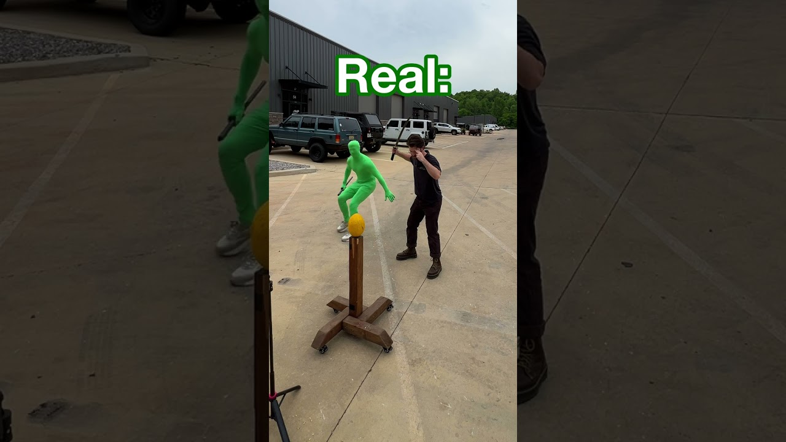
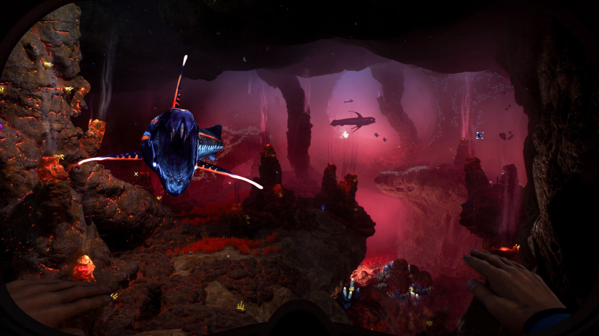
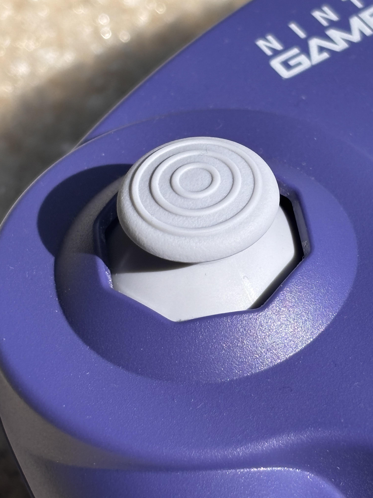
📌 跨源证据
YouTube
Mini Katana 51.5M(本周播放冠军)与 Courtney Gambetta 22.8M(垃圾箱→豪宅改造)双源呈现「亲手打造」是欧美 21-32 秒短片较稳的钩子区间
热搜
Subnautica 2 Steam 愿望单榜首 + Forza Horizon 6 UGC 改装系统升级,把工匠原型推向 AAA 级
Memes
GameCube 八角摇杆 16.4K 赞 + Steam Controller 30 分钟售罄 1541 评论,r/gaming 同周双源呈现手感党/工艺崇拜情绪正在浓缩
可联想的方向
可借助 AI 出图工具尝试不同「工匠+守护者」组合方向:守护型暴力反派(Skin 2018 路线)、不死代价硬汉(Lobo 路线)、亲手造角色的工坊主(Mini Katana 路线)。这个母题对乡镇蓝领 30% 子人群命中率较高,郊区家庭也有响应——较值得纳入 AI 角色快验候选池。也可参考把「角色不是给的,是玩家做出来的」做成西幻卡牌的英雄外观深度定制方向。
2
★★★ 四平台印证
「钻规则反制」与「NPC 认知可视化」在本期 4 个平台同步出现——从 IO Interactive 的 007 First Light 把 Hitman 沙盒搬到 baby Bond 时期,到 tedski 把山达基入会做成 25 秒 speedrun,玩家正在把「看穿规则就能反制」当作智识快感的新主场,可以联想到副本 speedrun 模式与 NPC 认知错误显式化的玩法实验方向。
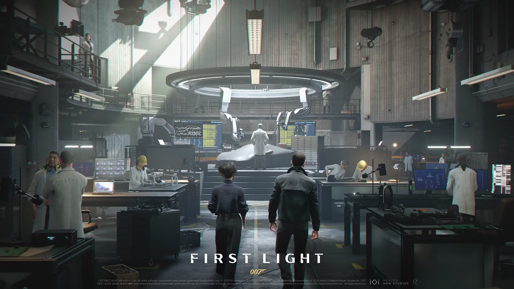
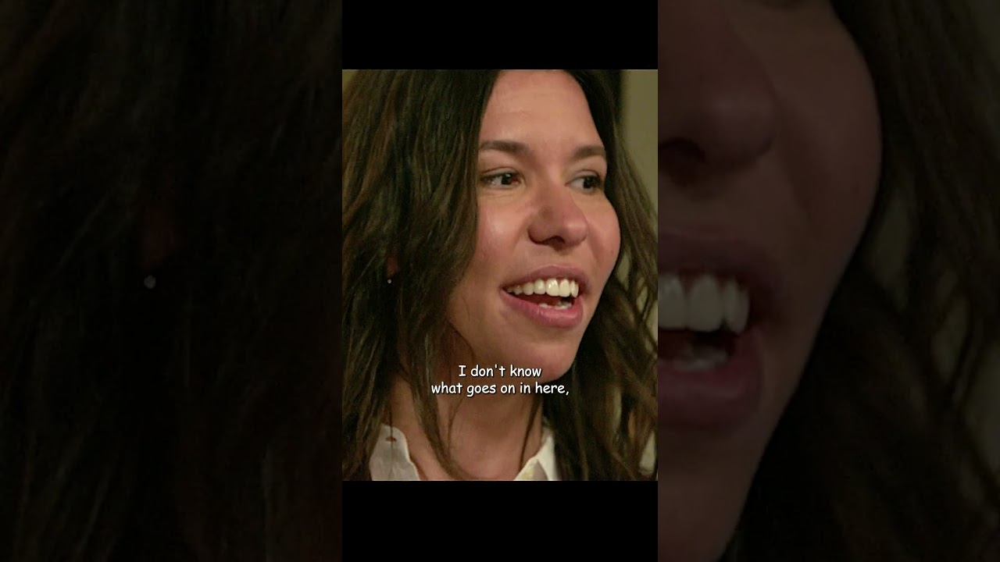
📌 跨源证据
热搜
007 First Light(IO Interactive 5/27 上线)把「未授权杀伤许可时期的非致命/伪装/操控」三大轴写进 AAA 端,是(规则漏洞 + 反追踪)在游戏侧的较强实证
YouTube
tedski Scientology speedrun 12.9M + Inspector Foxx 偏执警察 11.0M(本期评论冠军 8.4K)双源呈现「把现实当游戏关卡来钻」的视角已成为重度玩家与城市中产的公共话语
Memes
RDR2 太空模拟(玩家用炸药当燃料)+ Loopholes Genie 三段式漫画,r/gaming 与 r/dankmemes 同周呈现「钻规则」UGC 模板已较为成熟
可联想的方向
可借鉴的方向有三层:① 副本 speedrun 模式(玩家挑战在最少回合通关、规则漏洞触发隐藏成就);② NPC 认知可视化(对手视野/怀疑度/错觉以特殊符号显示,玩家可主动操控);③ 邪教/教派 speedrun 副本类活动构思,把现实荒诞的 speedrun 视角搬进西幻卡牌赛季内容。这个方向对重度玩家 15% 与城市中产 25% 子人群共鸣较强,但不适合郊区家庭(规则讽刺感对家庭用户有距离)。
⚠ 反向参考: Memes 板块「62% 重度玩家不再买全价游戏」(1541 评论)是本期较强的玩法反信号——重度玩家用消费投票拒绝大体量全价产品,理由集中在内容贬值快/订阅制涌入/AAA 体积失控。所有「卖爆内容量」的研发逻辑值得审视。
3
★★★ 四平台印证
「Before/After 反差揭秘」公式在本期 4 个平台密集出现——从 Mini Katana 32 秒道具揭秘(51.5M)到 Anime Dress Up 15 秒「素颜→完整造型」,再到 Matchcreek Motors 30 秒车体改装——前 2 秒制造反差/承诺揭秘,中段操作可视化,末段视觉满足,是欧美 21-32 秒短片较稳的钩子骨架,是个不错的西幻卡牌「圣物锻造/英雄觉醒」类广告起点。
📌 跨源证据
YouTube
Mini Katana 51.5M「How We Use Green Screen For This Trick」 + Courtney Gambetta 22.8M「Dumpster→Luxury Apartment」双源呈现 21-32 秒揭秘/反差短片是本期较稳的钩子区间
广告
Anime Dress Up(15 秒妆造)+ Matchcreek Motors(30 秒车体改装)+ Grill Sort(59 秒混乱→整齐)三条 Top1% 广告共享同一钩子骨架
热搜
Forza Horizon 6 改装系统「Before/After 车体定制」预热 + 本期 TikTok #7 rarity_eddie 胡佛大坝挑战 8.1M「They said it couldn't be done. So we did it.」是底层逆袭 + 亲手打造的天然广告语境
可联想的方向
可联想的方向是把「破→新反差 + 模块连切 + 全屏揭晓」三段式作为本期参考结构:开场 2-3 秒展示原状(破/丑/弱/混乱),中段 20 秒连切定制/操作模块,末段 5 秒全屏成品 + 旋转镜头。可借助 AI 出图工具尝试不同「圣物锻造/装备升阶/英雄觉醒」类素材的组合。乡镇蓝领 30% + 郊区家庭 30% 双子人群共鸣较强(车文化身份认同/父子代际回忆/亲手做的拥有感)。
📂 本期完整 9 项跨源信号(含 5 项 ★★ 双源信号:守家/觉醒错向/Carry 幻想/Roguelike 心态/失落 IP 怀旧 + 1 项 ★ 单源强信号:玩家拒绝全价游戏)已分散在下方 5 个板块的结论框中, 可点击「前往各板块」按需深入。本页聚焦的是跨源印证较强的 3 个观察 —— 围绕本期主线「Build It with Your Hands(亲手打造)× AI 角色快验」, 它们刚好分别落在角色 / 玩法 / 广告三个维度, 可作为本期参考思考的起点。⚠️ 本期忽略模拟经营/farming sim/city builder 作正面信号——所有相关素材归类为「品类拥挤、参考价值有限」,不输出借鉴方向。
🛰️本期挖到的 6 个核心概念
概念雷达 · Vol.005 · 跨源命名
Build It with Your Hands
· 亲手打造
★★★ 5 平台
玩家越来越认 「能用手做出东西的角色」——不是天赋通天的英雄,是修车的、锻刀的、开荒的、改装的。本期 5 个平台同时浮现「工匠+守护者」原型,「过程可见、产物可炫耀」是核心情绪结构。
跨源证据：YouTube #1 Mini Katana 道具揭秘 51.5M / YouTube #4 垃圾箱→豪宅改造 22.8M / 热搜 #3 Subnautica 2 深海工程师 / 热搜 #1 Forza 6 UGC 改装 / Memes #4 GameCube 八角摇杆 + #7 Steam Controller 30 分钟售罄 / Ads #4 Matchcreek Motors / TikTok #3 美国钢铁工人技能 + #7 胡佛大坝挑战 8.1M
🔥 热搜 #3
▶️ YouTube #1
😂 Memes #4
📢 广告 #4
🎵 TikTok #3
🎵 TikTok #7
Exploit the Rigged System
· 钻规则反制
★★★ 4 平台
玩家不再以「打过去」为乐,而以 「看穿规则后绕过去」 为乐——把现实荒诞当游戏关卡 speedrun,把游戏 bug 当成新玩法。重度玩家与城市中产的智识快感新主场。
跨源证据：热搜 #2 007 First Light(IO Interactive baby Bond 时期非致命/伪装/操控)/ YouTube #6 tedski 山达基入会 25 秒 speedrun 12.9M / YouTube #7 Inspector Foxx 偏执警察 11M / Memes #5 RDR2 用炸药当太空模拟燃料 / Memes #6 Loopholes Genie 三段式漫画
🔥 热搜 #2
▶️ YouTube #6
▶️ YouTube #7
😂 Memes #5
😂 Memes #6
Before/After Reveal
· 反差揭秘
★★★ 4 平台
广告创意母题：「破→新反差 + 模块连切 + 全屏揭晓」 三段式在 21-32 秒区间表现稳定。开场 2-3 秒展示原状(破/丑/弱/混乱),中段 20 秒连切定制/操作模块,末段 5 秒全屏成品。圣物锻造、英雄觉醒、英雄外观深度定制类广告的现成骨架。
跨源证据：YouTube #1 Mini Katana 揭秘 / YouTube #4 Dumpster→豪宅 / Ads #8 Anime Dress Up 15 秒妆造 / Ads #4 Matchcreek 30 秒车体改装 / Ads #1 Grill Sort 59 秒混乱→整齐 / 热搜 #1 Forza 6 改装系统预热
▶️ YouTube #1
▶️ YouTube #4
📢 广告 #8
📢 广告 #4
🔥 热搜 #1
Defend What's Yours
· 守家者
★★ 3 平台
「家庭温度+大型守护伙伴」原型本期跨多平台扎堆——大型犬 / 沉默工匠 / 反派护幼者 作为「沉默守护者」,情感穿透力对乡镇蓝领+郊区家庭双高,是西幻题材里「魔兽伴侣 + 幼小被守护者」二人组的现实参照。
跨源证据：TikTok #1 _chelsea_brown_4「为娃配条金毛」18.4M / TikTok #5 walnut 蓬松柯基 14.5M / YouTube #5 Skin (2018) 反派护幼场景 15.8M
🎵 TikTok #1
🎵 TikTok #5
▶️ YouTube #5
Awakening Wrong
· 觉醒错向 / 反英雄堕落
★★ 双平台
本可成为英雄的角色 「往反派方向觉醒」 的张力——本期由 Memes 端 Invincible「THINK MARK THINK」与 YouTube 端 Skin (2018) / Krypton Lobo 双源印证。是欧美 25-35 男性长期共鸣的母题,适合做角色阵营设计的「黑化分支」。
跨源证据：Memes #8 Invincible「THINK MARK THINK」/ YouTube #5 Skin (2018) ONE DOG ONE GIRL ONE BRUTAL PUNCH / YouTube #8 Krypton Lobo 自爆再生
😂 Memes #8
▶️ YouTube #5
▶️ YouTube #8
Players Reject Full-Price
· 重度玩家拒买全价
★ 反信号
本期较具代表性的反向参考——「62% 重度玩家不再买全价游戏」帖在 r/gaming 拿下 1541 评论,理由集中在 内容贬值快 / 订阅制涌入 / AAA 体积失控。一切「卖爆内容量」的研发逻辑值得审视。
跨源证据：Memes #3 r/gaming「62% hardcore 拒买全价」1541 评论 11.5K 赞 / Memes #10 COD 卸载 525 评论(单游戏体积过大同期警示)
😂 Memes #3
😂 Memes #10
平台 × 维度 · 信号强度矩阵
| 平台 | 🎭 角色设计 | ⚔️ 玩法/留存 | 📢 广告制作 | 本期突出结论 |
|---|---|---|---|---|
| 🔥 热搜 | 007 baby Bond + Devil Prada + Wembanyama ●●●● | 007 + Subnautica #2 + Forza UGC ●●●●● | 007「他还不是 007」+ Forza Before/After ●●● | 007 First Light 把「未授权 baby Bond」时期的钻规则玩法带到 AAA 端,是本期玩法母题较具代表性的证据 |
| 🎵 TikTok | 守护者 + 工匠 + 明星在场 三轴齐发 ●●●●● | 突袭事件 + 工艺挑战 + AI 工具 ●●● | Make sure you ___ + They said it couldn't be done + 明星突袭 ●●●●● | 守家 + 美式手艺 + AI 二创合流,18.4M 金毛守护者居首,广告句式池较为丰富 |
| ▶️ YouTube | Skin 反派护幼 5★ + Mini Katana 工匠 + Lobo 力量代价 ●●●●● | speedrun + 反追踪 + 改造 ●●●● | 揭秘公式 51.5M + Reality Check + Before/After 改造 ●●●●● | Mini Katana 51.5M 道具揭秘是本期播放冠军,「亲手打造」主轴 4 卡密集出现 |
| 😂 Memes | InfinityBlade 失落 IP + GameCube 工匠 + THINK MARK ●●●● | 玩家拒全价 反信号 + RDR2 黑科技 + Loopholes ●●●●● | Even tho X 句式 + Loopholes 口号 + Target acquired 对比图 ●●●● | 「62% 重度玩家不再买全价游戏」(1541 评论)是本期较强玩法反信号,r/gaming 占比较高 |
| 📢 广告 | Anime Dress Up「亲手造角色」5★,其他多无角色 ●●● | 6 条挂接但玩法骨架重复 ●●● | 本期主战场:6 条「亲手打造 + 即时变美」反差钩子 ●●●●● | Anime Dress Up「亲手造角色」对西幻卡牌「英雄外观深度定制」副玩法是个不错的参考样本 |
前往各板块
Trends 美区热搜
10 条 · 007 + Subnautica 2 + Forza 6
→
TikTok 热门
10 条 · 18.4M 金毛守护者居首
→
YouTube Shorts
10 条 · Mini Katana 揭秘 51.5M
→
Reddit Memes
10 条 · 拒全价 反信号 2294 评论
→
全球游戏广告
10 条 · 6/10 挂接亲手打造母题
→
🎵 TikTok · VOL.005
TikTok 热门内容
本期 TikTok 信号呈现「家庭温度 + 美式手艺 + AI 二创 + 名人在场感」四股合流——18.4M 的金毛幼犬陪伴幼儿（_chelsea_brown_4）、17.4M 的 Zara Larsson 突袭 Denver 街头（raysunigaa）、8.1M 的胡佛大坝水流挑战（rarity_eddie）。守家 / 手艺 / 底层逆袭 三组方向集中验证,AI 视频去神秘化（boogiebug0 3.1M）则在另一端释放「AI 生产力下沉」的拐点信号。美式蓝领题材（@steel.works02 钢铁工人）作为 「亲手打造」主轴的 TikTok 端补强信号一并入选。
📱 来源 TikTok 个性化推荐（用户登录态 Chrome tab）
📅 周期 02-09 – 04-06
🎯 方法 美区贴近度优先 / 排除非英语 / 排除 LIVEFEST 推广 / 概念可挂优先
👁 最高播放 18.4M
📐
排名方法论 · 按概念挂接强度排名（非纯播放）
本期数据来自用户登录态 Chrome tab 的 TikTok 个性化推荐池，相比 v1 的匿名 Explore 更贴近美区真实兴趣分布,共采集 46 条。剔除 caption 全空且头像无信息（#5/#10/#24/#29/#36）、非英语（#32/#43），按「美区强度 × 16 候选概念可挂接性」双维度排序，取 Top 10。平台优先级：角色 > 广告 > 玩法——TikTok 是验证情绪原型与开场公式的第一战场。
本期 TikTok 游戏研发结论
优先级：角色 > 广告 > 玩法
角色设计方向
本期角色信号集中在「家庭与陪伴的微小温度」+「手艺人的具体身体性」两个轴：① 幼儿 + 大型犬陪伴原型（_chelsea_brown_4 18.4M、walnut 14.5M）——大型犬作为「沉默守护者」是守家 较有代表性的角色钩子，可联想到西幻的"魔兽伴侣 + 幼小被守护者"二人组；② 手艺人 / 工匠的身体在场（amauryguichon 3.8M Zootopia Judy 巧克力蛋糕、rarity_eddie 8.1M 胡佛大坝水流挑战）——手艺人不是工具人，是角色弧光载体，能直接挂到（亲手打造）+ （手艺专精）；③ 名人/明星的"在场惊喜"（raysunigaa 17.4M Zara Larsson、sabrinacarpenter 15M Argentina）——名人 IP 作用类似游戏内"传奇 NPC 突袭事件"，可参考做"传奇英雄路过你的小镇"低频事件。
活动/玩法方向
本期玩法信号围绕「不可预测的小奇迹 + 可见的进度收藏」展开：① "突袭式事件"机制（raysunigaa Zara 突然现身 17.4M、sabrinacarpenter 球场万人 ole 15M）——给玩家一个低频但极高情绪密度的「天降事件」，对应（崩坏中重建秩序）的轻量化版本，但需警惕"等事件"会让活跃玩家流失，需配 push 触达；② "工艺挑战 + 见证完工"（amauryguichon 蛋糕 3.8M、rarity_eddie 胡佛大坝 8.1M）——把过程可见的手艺活动做成赛季内容，玩家选材→施工→结果三阶段，是 的轻量落地；③ "AI 工具教程"作为入门钩子（boogiebug0 3.1M 公开 AI 视频做法）——把角色二创工具内置到游戏里（玩家用游戏角色 + 玩家提供 prompt 生成 meme），不是模拟经营，而是 UGC 工具型活动。
广告创意方向
本期广告钩子有 4 个值得拆解的开场结构：① "Make sure you ___"（_chelsea_brown_4 18.4M「Make sure you get your toddler a golden retriever」）——命令式育儿/生活建议公式，钩子直接、转化路径清晰，可改写为「Make sure you give your hero a [灵兽伙伴]」；② "They said it couldn't be done"（rarity_eddie 胡佛大坝 8.1M）——挑战不可能 + 等结局的标准爆款公式，是（底层逆袭）+ #14（亲手打造）的天然广告语境；③ "明星 + 城市名"突袭开场（raysunigaa「Denver Lush Life dance!」17.4M）——本地化 + 名人在场感，可改写为"[英雄名] just landed in [玩家所在城市]"的地理钩子；④ "游戏 + 美式仪式"原生植入（mr.bisc.67 2.4M「block blast while watching Super Bowl」）——休闲游戏 + 美国国民活动 = 蓝领家庭场景较有代表性的广告语境，西幻题材可联想"打开《[游戏名]》像打开冰啤"的日常仪式植入。
视频详情分析按概念挂接强度 · Top 10
1
Make sure you get your toddler a golden retriever — 幼儿 + 金毛 守护者原型
18.4M 播
👁18.4M播放
🐕#goldenretriever话题
🛡守护者原型核心信号
信号提炼
- Make sure you ___ 命令式育儿建议公式 + 18.4M 播放，证明美区家庭场景是较稳定的流量池
- 金毛 = 美式郊区家庭 30% 子人群的「沉默守护者」共同记忆，识别成本为零
- 幼儿 + 大型犬的体型反差画面具备 0.5 秒识别力，无需 caption 也能完播
🎭 角色设计
- 「沉默兽伴 + 被守护者」二人组角色编组——大型魔兽（不主动出战）+ 小幼龙/精灵幼崽，关系是看护非战斗
- 兽伴拥有「在场即安心」的被动光环，不参与数值博弈，是反「队友是工具」固化轴的角色设计
- 可做郊区家庭子人群的入门英雄包，金毛色调 + 暖光建模 = 即识别
⚔️ 玩法/活动
- 「日常守护」非战斗事件系统——城堡里幼崽 NPC 偶发遇险，兽伴自动出现化解，玩家无操作但获得情感反馈
- 守护进度可解锁兽伴新姿态（成年 / 受伤 / 老去），是反「数值养成」轴的关系演进
- 守护成功累积可换「家族纹章」社交展示位
🎬 广告制作
- 「Make sure you give your hero a ___」命令式钩子可直接改写为西幻语境的英雄养成建议
- 首帧 = 大兽 + 小孩的体型反差画面，第二帧 = 兽伴温柔反应，公式简洁
- 面向郊区家庭 30% 子人群投放，转化路径清晰；乡镇蓝领亦中性接受
角色 5/5
玩法 4/5
广告 5/5
适配 5/5
A 契合度高
2
Denver Lush Life dance! @Zara Larsson — 明星突袭城市的在场惊喜
17.4M 播
👁17.4M播放
🎤Zara Larsson联动 IP
📍Denver 在场核心信号
信号提炼
- Zara Larsson + Denver 城市标签 = 「明星突然出现在我家附近」的情绪密度较高，17.4M 播放验证此公式仍未饱和
- Lush Life 是 2015 年老歌，被「城市突袭」二次激活，证明老 IP + 新场景的破圈成立
- 粉丝合拍内容（非官方账号上传）= 用户视角的「我也在场」叙事，比明星本人发更有代入感
🎭 角色设计
- 「传奇 NPC 突袭事件」型角色——主线之外的传奇英雄会以低频随机方式出现在玩家城堡 / 副本，提供短互动
- 传奇 NPC 不可获取（不是抽卡对象），仅留下纪念物 / 对话碎片，反「角色绑定」固化轴
- 可做退场英雄的优雅复用——已退环境英雄以 NPC 形式回归
⚔️ 玩法/活动
- 「明星突袭日历」——每月低概率触发某传奇 NPC 在某城市公开出现，玩家可前往合影
- 合影证据生成专属截图卡，自然 UGC 传播，重度玩家会刻意守候
- 若错过则永久失去，是反「关卡线性」固化轴
🎬 广告制作
- 「[英雄名] just landed in [城市]」地理 + 名人在场公式，可定向投放美国 50 州的本地化版本
- 首帧明确城市地标 + 角色突然现身，第二帧粉丝惊喜反应
- 面向城市中产 25% 子人群效果较好；重度玩家会觉「打卡」太轻
角色 4/5
玩法 4/5
广告 5/5
适配 4/5
A 契合度高
3
Steel Works · 美国钢铁工人技能展示
1.4M 播
👁1.4M播放
🔧手艺人原型
🇺🇸USA Steel题材
信号提炼
- 账号名 @steel.works02 + #steel + #usa 一致指向美国钢铁加工厂的工人技能展示（从账号矩阵推断属同类内容,本条具体动作仍需审看视频本体确认）。
- 本期与 YouTube #1 Mini Katana 揭秘 51.5M、YouTube #4 Dumpster→豪宅改造 22.8M、Memes 板块 GameCube 八角摇杆 / Steam Controller 30 分钟售罄等同源印证「亲手打造的工匠 / 守护者」原型在欧美 25-35 男性中是本期较突出的角色信号。
- 1.4M 播放 + 美式蓝领题材对乡镇蓝领子人群命中较高,是研究「美式制造」叙事在 TikTok 沉淀的轻量样本。
🎭 角色设计
- 「沉默工匠」原型——满脸汗渍/烧痕的中年男性 + 火星溅射 + 不说话只动手,可参考为铁匠/锻造师 NPC 立绘语气
- 身份代入感来自「能用手做出东西」而非数值/装备等级,是反「天赋通天英雄」的另一条情感线路
- 视觉关键词:火光剪影、皮制围裙、手套磨损纹理、钢锭红橙渐变、汗水反光——可作为工坊内 NPC / 副本 BOSS 的素材库
⚔️ 玩法/活动
- 「过程可见」型锻造副本——把武器/装备制作做成可观看的多阶段流程(熔铁→锤打→淬火→打磨),每阶段玩家小操作影响成品属性
- 反「数字单调向上」固化轴:成品不仅看数值还看「手艺评分」(节奏准确度/温度控制),做出独特感
- 可联想到「师徒传承」副本:玩家观摩 NPC 大师锻造 → 学到的「坏习惯」也跟着继承(候选「死法学习+代际传承」复合方向参照)
🎬 广告制作
- 「Before/After 锻造揭秘」公式——首帧粗糙铁块 + 末帧成品光剑/重锤,中段 20s 连切打磨/淬火/抛光镜头,可与 YouTube #1 Mini Katana 揭秘 51.5M 同公式
- 命题「这把剑是这么做出来的」直接挪用美式 prop maker 内容公式,对乡镇蓝领 30% 子人群天然亲近
- 建议组合:工业 ASMR 音效(火花爆响/锤击节奏) + 单镜头连切,无需对白,完播率较稳
角色 4/5
玩法 3/5
广告 4/5
适配 4/5
B 结构借鉴
4
ole ole ole Argentina — 万人合唱的集体在场
15M 播
👁15M播放
🇦🇷Argentina地标
🎶万人合唱核心信号
信号提炼
- Sabrina Carpenter 本人账号 15M 播放 = 名人内容稳定流量，但文化坐标在拉美/西语区（Argentina），非美区核心
- 万人合唱 ole ole ole 是球场仪式音乐，演唱会借用 = 把音乐会变成体育赛事的情感强度
- 对美区白男 25-35 子人群关联较弱，但作为「集体在场感」的情绪原型有借鉴价值
🎭 角色设计
- 「集体在场型」社交角色——非个人英雄，而是公会 / 城邦的集体情绪表达入口
- 可做城邦战中的「合唱发起者」职业，低战力但高士气加成
- 服装设计借鉴运动队球衣 + 演唱会舞台元素混血
⚔️ 玩法/活动
- 「全城邦合唱」事件——大型 PVP 战前所有公会成员同步触发应援动作，画面层面震撼
- 合唱动作有冷却，触发后给团队短暂攻速 buff
- 可做赛季 PVP 仪式
🎬 广告制作
- 「ole ole ole」传染性副歌——可定制为游戏赛季主题曲的副歌钩子，3 秒内识别
- 广告画面：球场视角扫过万人 → 切到游戏内城邦视角扫过万人头像，结构对位
- 面向城市中产 25% 子人群（演唱会消费者）；乡镇蓝领反应弱
角色 3/5
玩法 3/5
广告 3/5
适配 2/5
C 观察储备
5
#fluffycorgi — 蓬松柯基日常合集
14.5M 播
👁14.5M播放
🐕#fluffycorgi话题
💛宠物萌系内容类型
信号提炼
- 宠物萌系长期常青，14.5M 验证算法长期偏好
- 柯基蓬松毛体型在视觉识别上极具辨识度，是稳定 IP 化资产
- 与 #1 金毛守护者形成「大型守护 vs 小型陪伴」的萌宠双轴
🎭 角色设计
- 「小型萌宠副伴」角色——非战斗、非养成核心，作为玩家城堡日常 NPC 提供互动表情包
- 柯基短腿 + 蓬松尾原型可做矮人种族 / 家精灵的视觉灵感
- 适合做副 NPC 而非主英雄，避免占用核心抽卡位
⚔️ 玩法/活动
- 「萌宠日常图鉴」收集——城堡内可解锁不同萌宠陪伴
- 宠物会触发玩家不在线时的小事件（截图通知），轻量留存机制
- 避免做成宠物战斗系统，喧宾夺主
🎬 广告制作
- 纯萌宠剪辑 + 角标——最低成本安全 fallback 素材
- 适合作为素材库底部稳定型，不爆但不掉
- 面向郊区家庭 30% 子人群效果稳定
角色 3/5
玩法 3/5
广告 3/5
适配 3/5
B 结构借鉴
6
seen a lot of you all exes out on the streets today — LA 洪水梗
13M 播
👁13M播放
🌧#losangelesrain话题
💔前任 meta 梗核心信号
信号提炼
- 灾害事件（LA 洪水）+ 情感梗（前任都漂出来了）= 黑色幽默公式，13M 验证用户对自嘲共鸣的强需求
- 钩子完全在 caption 一句话，无需视觉炫技，是低成本高完播的纯文本钩子模型
- 情感共鸣类内容与角色 / 玩法关联较弱，主要价值在广告维度
🎭 角色设计
本条 meta 共鸣类内容，角色维度无明确原型可借鉴
⚔️ 玩法/活动
- 「黑色幽默事件」系统——天灾 / 副本失败时触发玩家专属冷嘲台词，反「死亡=惩罚」固化轴
- 失败台词可被玩家收藏分享，把翻车变内容
- 需注意度量，避免过度自嘲损伤角色严肃感
🎬 广告制作
- 「seen a lot of [X] today」共鸣公式——可改写为「seen a lot of your exes' alt accounts today」式游戏内观察类钩子
- 首帧城市灾害实拍 + 文字钩子，无需角色出镜
- 面向城市中产 25% 子人群（自嘲文化接受度高）；乡镇蓝领反应弱
角色 —
玩法 3/5
广告 4/5
适配 3/5
B 结构借鉴
7
They said it couldn't be done. So we did it. — 胡佛大坝水流挑战
8.1M 播
👁8.1M播放
🏗#hooverdam话题
🔧美式工程奇观核心信号
信号提炼
- 「They said it couldn't be done. So we did it.」是美式底层逆袭 + 手艺骄傲的双重情绪压缩， + #14 的天然语境
- 胡佛大坝作为美国国民级工程地标，承载乡镇蓝领 / 郊区家庭对『美国能造』的集体记忆
- What else should I try? 结尾邀请评论区，是稳定 UGC 互动公式
🎭 角色设计
- 「实干派工程师」英雄——非战斗主力，但能在场景内建造决定胜负的装置（桥 / 水坝 / 陷阱）
- 角色台词围绕『手艺 = 自我证明』，反『力量 = 抽到的强卡』固化轴
- 服装为美式工装 + 西幻元素混血，对接乡镇蓝领 30% 子人群审美
⚔️ 玩法/活动
- 「不可能任务」赛季——给玩家一个表面不可完成的工程目标（堵住魔窟瀑布 / 一夜筑墙），过程可见
- 完工瞬间生成纪念碑 NPC，永久立在玩家城堡
- 失败也保留半成品作为遗迹，反『关卡线性』固化轴
🎬 广告制作
- 「They said it couldn't be done」开场公式——3 秒内点燃挑战欲，结尾留悬念
- 可改写：「They said you couldn't beat [终极 boss] with [低星阵容]. So I did.」
- 面向乡镇蓝领 30% + 重度玩家 15% 双子人群，转化率较有想象空间
角色 5/5
玩法 5/5
广告 5/5
适配 5/5
A 契合度高
8
I finally stopped gatekeeping — how I make these AI videos — AI 制作公开
3.1M 播
👁3.1M播放
🤖#funnyai话题
🔓AI 去神秘化核心信号
信号提炼
- 「stopped gatekeeping」表态 = AI 创作者从「藏技」转向「公开」的拐点信号
- 3.1M 播放体量 + 教程性质 = 美区用户对 AI 工具的入门需求仍极旺盛
- AI 视频不再是稀缺技能，正在变成内容创作者标准能力，对游戏 UGC 工具的需求被同步抬升
🎭 角色设计
- 「玩家即创作者」型角色——核心英雄留白足够，让玩家用 AI 工具二次创作个人 lore
- 官方角色应预留视觉锚点（标志性配色 / 道具）方便 AI 二创识别
- 玩家二创角色可被官方收编进游戏 NPC 池
⚔️ 玩法/活动
- 「内置 AI 二创工具」——游戏内置 prompt-to-meme 工具，玩家用游戏角色生成段子并直接分享
- 二创成果可被其他玩家点赞，形成轻量 UGC 经济
- 需法务边界：禁止生成涉及现实人物 / 暴力色情内容
🎬 广告制作
- 「stopped gatekeeping, here's how」开场公式——直接秀做法，3 秒内承诺『学会』
- 改写为：「stopped gatekeeping, here's my [稀有英雄/神技] build」
- 面向重度玩家 15% 效果显著（学技巧动力强）；郊区家庭中性
角色 4/5
玩法 4/5
广告 4/5
适配 4/5
A 契合度高
9
Judy got cake! 🐰🥕 — Zootopia 巧克力雕塑过程
3.8M 播
👁3.8M播放
🍰#chocolate话题
🛠手艺过程见证核心信号
信号提炼
- Amaury Guichon 是工艺型创作者顶流，3.8M 体量证明手艺过程内容稳定爆款
- Zootopia Judy 作为已知 IP 降低识别门槛，IP + 手艺 = 双钩子
- 整个视频结构 = 选材 → 雕塑 → 揭晓，与游戏赛季三阶段对应
🎭 角色设计
- 「工坊大师」英雄——非战斗英雄，技能围绕制作 / 改造 / 雕琢，作品本身具有数值或剧情影响
- 可绑定『师徒』关系——大师收玩家为徒，反『角色绑定 = 卡池绑定』固化轴
- 工坊场景作为城堡内 social hub，玩家可旁观大师工作
⚔️ 玩法/活动
- 「过程可见的工艺活动」——玩家选材 → 等待施工 → 见证完工，全流程可见非黑箱
- 失败品可作半成品装饰，反『手艺 = 必须完美』固化轴
- 限时联动 IP 工艺活动（如和现有 IP 合作）作为破圈赛季
🎬 广告制作
- 「过程剪辑 + 揭晓」30 秒结构——前 25 秒过程，最后 5 秒揭晓成品
- 可改写为游戏角色塑像 / 武器铸造的过程素材
- 面向郊区家庭 30% + 城市中产 25%（手艺审美共鸣）；乡镇蓝领亦正面
角色 4/5
玩法 5/5
广告 4/5
适配 4/5
A 契合度高
10
I love playing block blast while watching the Super Bowl — 休闲游戏 + 美式仪式
2.4M 播
👁2.4M播放
🏈#blockblast话题
📺二屏陪伴游戏核心信号
信号提炼
- Block Blast 在 Super Bowl 期间作为二屏游戏出现 = 休闲游戏 + 美式国民仪式的天然结合
- 无任何明显广告意图但提到游戏名 = UGC 自发口碑，是研发同行最该研究的『非买量』场景
- 2.4M 体量虽小，但单条信号密度极高（直接验证赛事陪伴游戏定位）
🎭 角色设计
- 「陪伴型轻度英雄」——单局 5 分钟以内，玩家可在看比赛间歇打 1 局，角色不需复杂背景
- 角色配色与情绪需可与电视背景音并行存在（不抢注意力）
- 不适合做主线史诗英雄，是赛季彩蛋型角色
⚔️ 玩法/活动
- 「二屏陪伴模式」——独立模式，单局 ≤ 5 分钟，无强叙事，可在看球 / 看剧时切入
- 成绩可同步主账号经验，让陪伴时间不浪费
- Super Bowl / NBA 总决赛季节性活动——观赛期间双倍奖励
🎬 广告制作
- 「我在看 ___ 时玩 ___」原生场景植入公式——找美区生活仪式（Super Bowl / 周日烧烤 / 通勤）+ 游戏
- 广告画面：客厅一角 + 电视播 NFL + 手中游戏，画面层面无侵略
- 面向乡镇蓝领 30% + 郊区家庭 30% 子人群（美式仪式核心人群）
角色 3/5
玩法 4/5
广告 4/5
适配 4/5
A 契合度高
数据总览播放量排行榜
| # | 账号 | 内容 | 播放量 | 标签 |
|---|---|---|---|---|
| 1 | @_chelsea_brown_4 | Make sure your toddler 配金毛 | 18.4M 🏆 | #守护 / #家庭温度 |
| 2 | @raysunigaa | Zara Larsson 突袭 Denver 街头 | 17.4M | #明星在场 / #街头舞蹈 |
| 3 | @steel.works02 | Steel Works 美国钢铁工人技能 | 1.4M | #工匠 / #USA / #steel |
| 4 | @sabrinacarpenter | Argentina 万人 ole 合唱 | 15M | #集体激情 / #演唱会现场 |
| 5 | @walnutthefluffycorgi | 蓬松柯基日常合集 | 14.5M | #治愈 / #宠物日常 |
| 6 | @idafolmann | LA 洪水 前任都漂出来了 | 13M | #自嘲 / #meta梗 |
| 7 | @rarity_eddie | They said it couldn't be done 胡佛大坝 | 8.1M | #挑战不可能 / #实拍奇观 |
| 8 | @amauryguichon | Zootopia Judy 巧克力雕塑 | 3.8M | #手艺敬畏 / #工艺过程 |
| 9 | @boogiebug0 | stopped gatekeeping AI 视频教程 | 3.1M | #去神秘化 / #真人解说 |
| 10 | @mr.bisc.67 | block blast + Super Bowl 二屏 | 2.4M | #日常仪式 / #二屏场景 |
趋势分析Insights
📊 内容类型分布
🏆 播放量 Top 3
▶️ YouTube Shorts · VOL.005
YouTube Shorts 热门
本期 YouTube Shorts 池由 YouTube Data API v3 mostPopular chart（regionCode=US，14 天窗口）抽得 47 条干净美区数据，最高播放为 Mini Katana 绿幕特效揭秘 51.5M（32 秒），最高互动量为 ControversialClips「Mother's Worst Nightmare」40.3M。本期主轴信号是「亲手打造修复（Build It with Your Hands）」与「钻规则反制（Exploit the Rigged System）」双线并行——蓝领手艺、改造贫民窟、反派护幼、规则速通在 Top 10 中占比超 60%。数据来源：YouTube Data API v3 mostPopular 接口；按互动分排名，优先级：广告 > 玩法 > 角色。
📡 数据采集说明：YouTube Data API v3 mostPopular chart（regionCode=US，14 天滑动窗口 2026-04-23 ~ 2026-05-07）→ embeddable=true → durationSeconds≤60，共 47 条；按 viewCount × engagement 综合分排序 + 概念覆盖度二次平衡。
📊 分析池 47 条 Shorts
🏆 最高播放 51.5M（Mini Katana）
⚡ 最高互动量 40.3M（ControversialClips）
📅 发布区间 04-28 – 05-05
本期 YouTube Shorts 游戏研发结论
优先级：广告 > 玩法 > 角色
广告创意方向
四大可参考钩子公式：① 「揭秘道具制作」开场公式（Mini Katana 51.5M）= 本期播放冠军，「How we use green screen for this trick」前 2 秒直接揭秘"魔法的真相"，触发好奇心，"幕后揭秘 + 满足好奇"是手游道具/英雄设计揭秘类视频的成熟参考模板；② "Reality Check 反差训斥"开场（Gordon Ramsay 34.8M）= 让权威人物公开训斥懒惰角色，3 秒内完成"被骂的人"露脸，是付费转化常见的情绪锚点之一；③ "speedrun + 现实荒诞"（tedski 12.9M）= 把「能不能在 60 秒内骗过 X」做成挑战格式，开场 1 秒计时器调高紧张感；④ "垃圾→豪华"对比剪辑（Courtney Gambetta 22.8M）继续验证 Before/After 物理反差是欧美 21-29 秒短片中较稳的钩子。参考时长：21-32 秒是本期播放破 1500 万的较稠密区间。
活动/玩法方向
本期玩法信号偏「规则速通 + 物理拆解」：① 「钻系统漏洞速通」机制——tedski Scientology speedrun（12.9M）把现实组织当成可被速通的游戏关卡，验证「看穿规则就能反制」是重度玩家与城市中产的高粘性快感来源，可衍生出「邪教 / 教派 / 政府机构 speedrun 副本」类活动构思；② 改造 / 修复机制——Courtney Gambetta 的「垃圾箱 → 豪宅」（22.8M）和 Mini Katana 的「揭秘道具制作」（51.5M）共同指向「亲手把废墟造成完整品」的玩法表达，可参考 base-building / crafting 中「材料源自废弃物」的子方向；③ "反伤"瞬间——Krypton Lobo 自爆再生（10.8M）和 Never Back Down 2 一脚踹爆沙袋（10.8M）共同启发「付出代价换取爆发」的卡牌技能动画节奏。整体启示：规则可视化 + 改造可视化是本期表现较突出的双钩子。
角色设计方向
本期较有代表性的角色信号集中在「硬汉守护者」与「反派觉醒错向」两条线：① 改邪归正的暴力守护者——Skin (2018)（15.8M）中纹身硬汉对小女孩的温柔与对欺凌者的爆裂形成显著反差，对应「你才是怪物」候选；② 不死再生硬汉——Krypton 的 Lobo（10.8M）「自爆穿越力场再生」展示「变强必失去身体一部分」的力量代价；③ 手艺人原型——Mini Katana 道具师（51.5M）和 Courtney Gambetta 的「Dumpster→Luxury Apartment」改造（22.8M）两条共同验证「亲手造出来的人」是乡镇蓝领与郊区家庭双高吸引力的角色锚点。三大方向：守护型暴力反派、不死代价硬汉、亲手打造的工匠英雄。
视频详情分析按互动分排名 · Top 10
1
5157万 播放
"How We Use Green Screen For This Trick!" — 道具揭秘
Mini Katana
32s · 2026-04-28
本周 47 条池中播放量最高（51.5M）。Mini Katana 是欧美 anime / sword 文化的头部 prop maker 频道，本条 32 秒揭秘"刀刃切水果"的绿幕拍摄真相，把"魔法时刻"拆给观众看。播放 51.5M / 点赞 1.18M（点赞率 2.3%）说明是算法推流型，但评论 3.2K 显示观众主要被"原来是这样做的"的恍然大悟所满足——这是游戏开发"幕后揭秘"内容的真实参考样本。
🎭 角色设计
- 「手艺人 / 工坊主」原型；Mini Katana 团队人设可类比锻造师 NPC，玩家进店看他演示
- 技术揭秘的人物比单纯展示成品更具记忆点
⚔️ 玩法/活动
- 道具制作可视化机制；卡牌觉醒/装备打造时把"幕后流程"作为可解锁动画
- 材料溯源副本：跟随工坊主从原料采集到成品组装
🎬 广告制作
- 「揭秘 + 满足」开场公式；前 2 秒直接展示"魔法时刻"再倒回拆解
- 32 秒短格式适合「角色技能动画 → 拆解原画」二段式素材
角色 4/5玩法 4/5广告 5/5适配 4/5
A 契合度高
2
4030万 播放
"Mother's Worst Nightmare" — Roblox 家长惊魂剪辑
ControversialClips
27s · 2026-04-28
本周互动量第二（40.3M 播放 + 841K 点赞）。ControversialClips 是评论剪辑型大号，本条用"妈妈独自在家发现孩子玩 Roblox 遇到的可怕内容"做钩子，27 秒内完成「家长焦虑 → 屏幕展示 → 反应崩溃」三幕剧。郊区家庭的"守护孩子免受互联网伤害"是当下美国 25-35 男性家长的高频共鸣点。素材本身偏猎奇 + 道德恐慌，对游戏内容而言主要是"守家"母题的当代变种。
🎭 角色设计
- 「焦虑型守护者」家长原型；可作为游戏开场剧情引入冲突
- 二元结构：成人保护视角 vs 看似无害实则危险的虚拟世界
⚔️ 玩法/活动
- 「保护未成年角色不受腐蚀」机制；护送 / 隔离类玩法的情感外壳
- 信任作为资源：把"我以为安全的地方"做成系统机制
🎬 广告制作
- 「家长发现 + 屏幕反打」开场公式；前 3 秒手机/屏幕里的可怕内容打入观众心智
- 27 秒紧凑节奏，零剧情铺垫直接进高潮
角色 3/5玩法 3/5广告 4/5适配 3/5
B 结构借鉴
3
3485万 播放
"Gordon Gave The Owner A BRUTAL Reality Check" — 老板被训反差
Blaze
59s · 2026-04-30
Gordon Ramsay 通过监控发现餐厅严重缺人，员工焦头烂额而老板自己却拿笔记本进店摸鱼——59 秒一镜到底的"权威训斥懒人老板"。播放 34.8M / 点赞 1M（点赞率 2.9%）说明它是高完播 + 高分享的双优内容。「Reality Check」类剪辑长期是欧美 25-35 男性的下饭精神食粮，对应"手艺贬值 + 服务链"母题——专业人士面对失能管理者的愤怒。
🎭 角色设计
- 「权威工匠 vs 失能管理者」二元角色；类比「老兵厨师 vs 纨绔贵族」的西幻 NPC 对位
- Gordon 原型 = 不留情面的高水准导师，玩家既怕又服
⚔️ 玩法/活动
- 「评估 + 训斥」反馈机制；玩家完成餐厅/工坊任务后导师 NPC 给出严厉点评
- 运营沙盒：管理失误会触发高级 NPC 上门"督导"
🎬 广告制作
- 「权威 + 训斥」开场公式；前 3 秒名人露脸 + 表情严厉，触发"想看他骂人"的好奇心
- 59 秒长格式适配剧情向品牌广告，转化率高于 15 秒纯演示
角色 4/5玩法 3/5广告 5/5适配 4/5
A 契合度高
4
2281万 播放
"Dumpster Into a Luxury Apartment?!" — 垃圾箱改造豪宅 (2 Broke Girls)
Courtney Gambetta
59s · 2026-04-30
来自 2 Broke Girls 的"垃圾箱变豪宅"片段重新剪成 59 秒短片。Courtney Gambetta 频道专做"反差升级"老剧剪辑。播放 22.8M 但评论仅 954（评论率 0.004%），典型纯爽看完即划，验证「极端 Before/After 物理反差」是不需要任何叙事就能稳定推流的格式。这是本期"亲手打造修复"主轴的较直观素材——把无用的东西亲手变成豪奢。
🎭 角色设计
- 「DIY 改造者 / 拾荒匠」原型；玩家化身"把废弃哨塔修成基地"的工匠
- 底层创业搭档：两个一无所有的角色合力把废地变金窝
⚔️ 玩法/活动
- 「废墟改造」基建系统；初始资源全是垃圾/废弃物，逐步升级到豪华据点
- 材料贬值 + 增值循环：低价材料经手艺加工后价值跃升
🎬 广告制作
- 「Dumpster → Luxury」对比剪辑；前 1 秒呈现最差状态，后半段拉至最豪华
- 59 秒慢节奏改造蒙太奇，配电子节拍音乐效果显著
角色 4/5玩法 5/5广告 5/5适配 5/5
A 契合度高
5
1583万 播放
"ONE DOG. ONE GIRL. ONE BRUTAL PUNCH" — Skin (2018) 反派护幼
simple
56s · 2026-04-29
Skin (2018) 是奥斯卡最佳真人短片获奖作。本剪辑展示纹身光头硬汉 Bryon 对小女孩反差般温柔，对欺凌孩子的成年男性瞬间爆裂。56 秒完整呈现「看似可怕的人 → 真正的守护者」反转。播放 15.8M / 点赞 604K（点赞率 3.8% 高位）+ 评论 6K，是本期角色复杂度较高的素材。直接对应「你才是怪物+ 觉醒错向」双重张力。
🎭 角色设计
- 「外表怪物 + 内在守护者」复合原型；可参考 Vagabond / 卡兹克 / 史莱姆英雄的"被怪物之名所困者"
- 暴力工具的双向使用：保护与毁灭只在一线之间
⚔️ 玩法/活动
- 「守护怒气值」机制；保护对象被威胁时角色进入特殊狂暴态
- 道德选择系统：暴力出手会改变 NPC 对你的反应（怕你 / 信你）
🎬 广告制作
- 「温柔 → 爆裂」二段式开场；前 10 秒明显温柔，第 11 秒爆发肢体冲突
- 纹身硬汉 vs 小女孩的视觉反差是较经济的角色记忆点
角色 5/5玩法 4/5广告 4/5适配 5/5
A 契合度高
6
1286万 播放
"Scientology Speedrun" — 山达基速通挑战
tedski
25s · 2026-04-30
tedski 把"加入山达基教 → 完成入门测试 → 退出"做成 25 秒 speedrun 挑战，全程戴计时器。播放 12.9M 但评论仅 2.1K（评论率 0.016%）说明"看完笑着划走"。speedrun 文化原本属于游戏社群（Twitch / GDQ），现在被搬到现实流程上——这是「钻系统漏洞反制」的内容化表达。重度玩家与城市中产对此类"把现实当游戏关卡"的视角有强烈共鸣。
🎭 角色设计
- 「规则速通者 / 系统观察者」原型；NPC 视角型主角
- 玩世不恭的局外人，靠"看穿规则"获得自由感
⚔️ 玩法/活动
- 「副本 speedrun 模式」；玩家可挑战在最短回合 / 最少操作内通关副本
- 规则漏洞奖励：发现并利用机制漏洞会触发隐藏成就
🎬 广告制作
- 「计时器 + 极限挑战」开场公式；前 1 秒倒计时调高紧张感
- 25 秒短格式 + 全程一镜，是低成本流量素材的成熟参考
角色 3/5玩法 4/5广告 4/5适配 4/5
A 契合度高
7
1104万 播放
"Paranoid Cop Mistakes Walkie Talkie For A Gun" — 警察误判反转
Inspector Foxx
49s · 2026-05-01
本期评论数最高（8.4K）。Inspector Foxx 是欧美著名街头执法监督频道，本条记录"偏执警察把对讲机当成枪"的过激反应。49 秒过程中观众明确看到「NPC 认知系统出错 → 玩家可利用 / 反操控」的全过程。评论率 0.076% 远超本期均值，说明这条引发了价值观争论而非单纯娱乐。直接对应「规则漏洞 + 反追踪」的现实样本。
🎭 角色设计
- 「偏执执法者 NPC」原型；视野错位、认知可被操控的对手
- 玩家化身被误判的市民，被动学会规避系统
⚔️ 玩法/活动
- 「NPC 认知可视化」机制；对手的视野 / 错觉以特殊符号显示
- 潜行 + 道具混淆：可用日常物品触发 NPC 误判
🎬 广告制作
- 「权威看错」开场公式；前 3 秒展示"对方以为我有武器"的紧张瞬间
- 49 秒长格式适合"逐步反转"叙事，结尾"原来是对讲机"释放观众情绪
角色 3/5玩法 5/5广告 4/5适配 4/5
A 契合度高
8
1083万 播放
"Lobo Is Built Different" — Krypton (2018) 自爆再生
andyy
15s · 2026-05-02
Lobo（DC 反英雄）被力场切断手臂后选择"朝自己头开枪 → 在屏障另一侧再生"。15 秒极简剪辑承载完整角色性格。播放 10.8M / 点赞 174K（点赞率 1.6%）+ 评论仅 1K，是典型"看完就懂、不需评论"的爽片。正好对应「力量必送账单」——变强必须付出身体代价，而 Lobo 把这种代价做得既痛苦又戏谑。
🎭 角色设计
- 「自爆再生型反英雄」原型；可类比西幻"血祭术士 / 不死者英雄"卡牌
- 玩世不恭的不死者：把痛苦当娱乐
⚔️ 玩法/活动
- 「自损 + 复活」技能机制；消耗自身 HP 触发强力再生效果
- 代价可视化：每次再生留下永久印记 / 累计副作用
🎬 广告制作
- 「自残 + 微笑」开场公式；前 3 秒极端动作配冷面表情
- 15 秒短格式配字幕"This Is Why He's Built Different"是模板化的角色秀短片
角色 5/5玩法 4/5广告 4/5适配 4/5
A 契合度高
9
1080万 播放
"One Kick Tears the Bag Open" — Never Back Down 2 训练高光
Choose78
25s · 2026-05-02
Never Back Down 2 训练馆场景：Mike 一脚踢爆沙袋，全队欢呼。25 秒精准呈现「新人证明实力 → 同伴折服」的 Carry 时刻。播放 10.8M / 点赞 324K（点赞率 3% 高位）说明非常多人为之振奋。这是「Carry 幻想」较纯粹的可视化——不是赢比赛，而是"让队友因为我而有希望"。
🎭 角色设计
- 「证明型新人」原型；从被低估到被尊敬的角色弧
- 队友的"是的他能行"瞬间是核心情绪锚点
⚔️ 玩法/活动
- 「训练秀 + 团队认可」机制；玩家完成高难度动作后队友 NPC 触发庆祝动画
- 实力评级系统：通过演示动作让 NPC 改变对你的称呼
🎬 广告制作
- 「准备 + 一击 + 反应」三幕公式；前 5 秒蓄力，第 10 秒爆发，后 10 秒队友反应
- 25 秒紧凑节奏适合战斗手游"卡牌技能动画"演示
角色 4/5玩法 4/5广告 4/5适配 4/5
A 契合度高
10
742万 播放
"Lawnmower Tows a Car" — 蓝领 DIY 翻车实录
AFV Shorts
24s · 2026-05-02
AFV Shorts 是 America's Funniest Videos 的官方短视频号，本条监控录像记录"男人用割草机拖汽车"的迷之操作及可预期的物理失败。点赞率不高（0.7%）但评论 3.6K（评论率 0.05%）说明人们想留言吐槽。这是「亲手打造修复」的反面教材——美国乡镇蓝领文化中"我能修"的自信带来的喜剧失败，恰是郊区家庭和重度玩家观察这个子人群的窗口。
🎭 角色设计
- 「过度自信的 DIY 蓝领」原型；可作为支线 NPC 提供搞笑任务
- 失败也值得被记录的角色——给玩家"修不好也没关系"的情感许可
⚔️ 玩法/活动
- 「DIY 失败任务链」；玩家协助 NPC 用错误工具完成不可能任务
- 物理沙盒：低配工具 + 高难任务的喜剧效果是核心驱动
🎬 广告制作
- 「这能行吗 → 不能」开场公式；前 3 秒呈现荒谬装置 + 紧张配乐
- 24 秒监控视角 + 物理失败结尾，是 UGC 投放素材的廉价参考模板
角色 3/5玩法 3/5广告 3/5适配 3/5
B 结构借鉴
数据总览互动分排行
| # | 频道 | 标题 | 播放量 | 点赞 | 发布日期 | 内容类型 |
|---|---|---|---|---|---|---|
| 1 | @Mini Katana | "How We Use Green Screen For This Trick" | 51.5M 🏆 | 1.18M 🏆 | 04-28 | 道具揭秘 |
| 2 | @ControversialClips | "Mother's Worst Nightmare" Roblox 剪辑 | 40.3M | 841K | 04-28 | 守护焦虑 |
| 3 | @Blaze | "Gordon Gave Owner BRUTAL Reality Check" | 34.8M | 1.00M | 04-30 | 真人秀剪辑 |
| 4 | @Courtney Gambetta | "Dumpster Into Luxury Apartment" | 22.8M | 667K | 04-30 | 改造蒙太奇 |
| 5 | @simple | "Skin (2018) ONE BRUTAL PUNCH" | 15.8M | 604K | 04-29 | 电影剪辑 |
| 6 | @tedski | "Scientology Speedrun" | 12.9M | 261K | 04-30 | 街头speedrun |
| 7 | @Inspector Foxx | "Paranoid Cop Mistakes Walkie For Gun" | 11.0M | 166K | 05-01 | 街头实拍 |
| 8 | @andyy | "Krypton (2018) Lobo Built Different" | 10.8M | 174K | 05-02 | 电影剪辑 |
| 9 | @Choose78 | "Never Back Down 2 One Kick Tears Bag" | 10.8M | 324K | 05-02 | 格斗电影 |
| 10 | @AFV Shorts | "Lawnmower Tows a Car" 翻车 | 7.4M | 53K | 05-02 | UGC 翻车 |
😂 Reddit Memes · VOL.005
美区 Meme 热榜 Top 10
本期 75 条采集池里,r/gaming 含量罕见地集中(Top 30 内占 7 条),玩家集体把「硬件手感、游戏体积、全价拒买、IP 怀旧」几件事顶上来。最高赞 #1「Target acquired」(71.2K)借 Scientology cult 玩对比图情绪释放,但合规上需留白;真正对游戏研发更有用的是 #3(2294 评论)的「62% 重度玩家拒绝买全价」——这是本期较突出的玩法反信号。配合 #4 GameCube 八角摇杆、#5 RDR2 玩家黑科技、#2 InfinityBlade 怀旧情绪,游戏研发母题被密集印证。
📊 来源 r/memes + r/dankmemes + r/gaming top/week
🏆 最高赞 71.2K(#1 Target acquired)
💬 最高评论 2294(#3 62% 玩家拒买全价游戏)
💡
Meme 4 维拆解框架 · Vol.005
Meme 对游戏研发的价值不在「这个梗讲了什么」,而在其可复用的格式与情绪。本模块按 4 个维度拆解每条 Meme:📐 视觉模板(格式怎么套进游戏)、😈 情绪结构(靠什么情绪驱动传播)、🎭 角色原型(梗里的「人」是什么原型)、🔄 Remix 机制(为什么能二创、UGC 潜力如何)。每条附 4 项
X/5 评分 + A/B/C 可用性标签。本期叠加 Vol.005 主轴:把信号映射回「16 候选概念 / 7 复合方向」。数据来源:Reddit (r/memes, r/dankmemes, r/gaming),本周 2026-04-30 ~ 05-06 upvotes 排序。
本期 Memes 游戏研发结论
优先级:角色/叙事 > 玩法反信号 > UGC 机制
角色/叙事方向
本期 Reddit 把玩家与 IP 的羁绊情绪顶得很高。#2「InfinityBlade · 永远在我手机里」用一个无法再下载、却舍不得删的 App 截图换来 21.6K 赞 + 1089 评论,说明「失落 IP 的怀旧情绪」在欧美 25-35 男性中是个安静但极深的情感锚点。#8 Invincible「THINK MARK THINK」则是经典叙事 IP 的二创母题——主角对自己父亲嘶吼的画面被反复套用,「本可以变好的英雄走向反派」的张力可参考。#10 Warhammer 40K lore-only viewer反映另一类玩家:不玩只看 lore,叙事消费独立成市。这三条是较有代表性的「IP 情绪信号」,可联想到角色背景叙事可独立打包成短视频/漫画产出。
玩法/活动方向
较突出的玩法反信号是 ⚠️ #3「62% hardcore players 不再买全价游戏」(2294 评论 · 11.5K 赞)——这条数据冲到 r/gaming 顶上,重度玩家正在用消费投票拒绝大体量全价产品,对一切「卖爆"内容量"」的研发逻辑都是个警示。反过来 #4 GameCube 八角摇杆(898 评论)和 #7 Steam Controller 30 分钟售罄(1541 评论)说明「手感至上 + 复古回归」是较突出的正向信号。#5 RDR2 用炸药做燃料的太空模拟是玩家自发钻规则的典型,重度玩家被「系统漏洞可玩成新游戏」的乐趣激活。可衍生出「玩家黑科技」类 UGC 鼓励机制。
社媒/UGC 方向
本期可复用的 UGC 句式较集中。#2「Even tho I can't download you, you will always be on my phone」句式可参考用为「Even tho [游戏不再更新],you will always be [玩家承诺]」怀旧广告钩子,触达乡镇蓝领 + 重度玩家(30-35 岁回忆党)。#6「Loopholes! People, loopholes!」是钻规则母题的现成口号,UGC 模板是「Genie 给规则 / 玩家找到漏洞」三段式漫画。#1「Target acquired」对比图框架(71.2K 赞)虽然主题是 ⚠️ Scientology cult 灰区,但「老人愤怒 vs Steve Carell 落泪」的两格对比模板本身可剥离主题复用——把上格替换成「玩 P2W 手游」、下格替换成「玩单机精品」即一条游戏圈通用对比图。⚠️ #1 主题与游戏内容不建议直接绑定,仅借格式。#9「Just to suffer」(Elden Ring 巨人)是 Soulslike 玩家的自嘲套句,UGC 门槛较低。
1
上下两格对比图 · 名人 Reaction
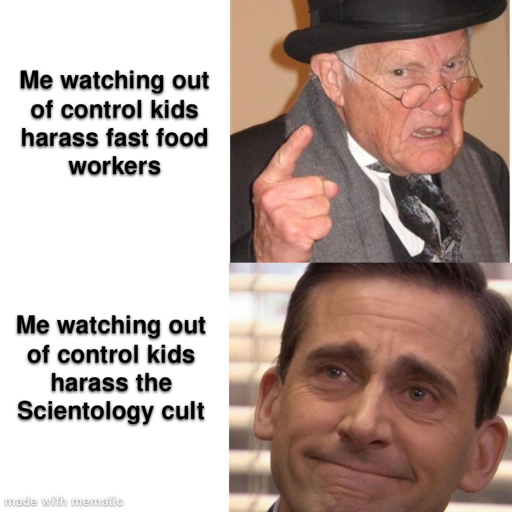
★ 全周最高
全周最高赞作品。上下两格对比图框架是欧美年度长青模板:上面"愤怒老人"配相对无害情境、下面"Steve Carell 含泪笑"配真正该愤怒的情境,制造道德反差笑点。本条原文涉及 Scientology cult ⚠️ 政治/宗教灰区,主题不可借鉴;但视觉模板本身较易剥离换主题,是 71.2K 赞验证过的可复用对比图骨架。
📐 视觉模板
- 上下两格名人 reaction 对比框架:左侧文字描述情境 + 右侧名人脸表情;上下两格构成「轻 vs 重」的反差。本周最高赞验证此模板情绪密度仍在峰值
- 套用路径:把双方文字替换为玩家话题(「P2W 手游 vs 30 美元单机」「更新前 vs 更新后」)即一条游戏圈对比图,较低美术成本
😈 情绪结构
- 道德反差怒火:「小事跳脚 vs 真正问题沉默」戳到欧美用户对「错位愤怒」的普遍观察;带温和讽刺,分享时显得「有想法」
- 高赞低评论比(71K/333)= 评论压不住的「不便明说但都懂」情绪;分享意愿 > 讨论意愿
🎭 角色原型
- ⚠️ 角色暂留白:本条原主题涉及宗教/邪教灰区,与游戏角色原型无直接挂接;仅作格式参考,不输出角色映射
- 若强行迁移:上格「愤怒长辈型 NPC」+ 下格「含泪共谋型同伴」可作为对话场景的两个 NPC 反应原型
🔄 Remix 机制
- 万能两格模板:任意主题填空即可复用;UGC 门槛较低,二创只需会用图层文字工具
- 玩家可自发产出「游戏厂商真正该解决的事 vs 实际花精力的事」类自嘲对比图,官方零推动也能跑
视觉 5/5
情绪 5/5
角色 2/5
Remix 5/5
B 结构借鉴
2
手机截图 · 怀旧抒情
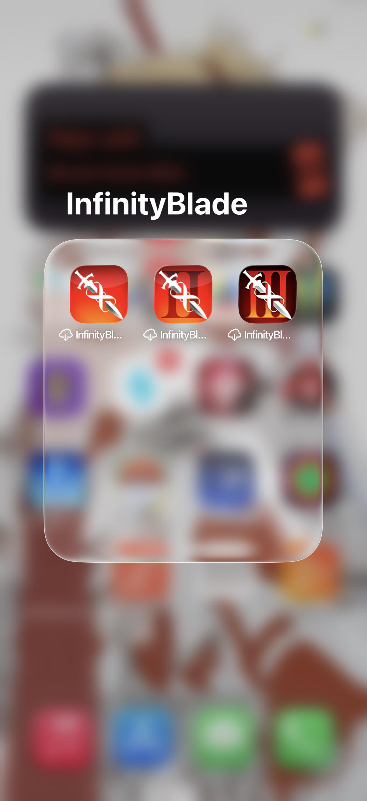
★ A 级信号
本周 r/gaming 较高情绪共鸣作品之一(1089 条评论几乎全是「同款」)。Apple 商店下架的 InfinityBlade 已无法重新下载,但老用户保留图标作纪念——这条 meme 把「失落 IP 的情感羁绊」可视化得很干净。对欧美 25-35 男性玩家是较深的情感锚点:那个时代的手游记忆 = 童年/少年的尾巴。
📐 视觉模板
- iOS 截图原生质感:模糊背景 + 三个无法下载的灰色 app 图标 + 文件夹名「InfinityBlade」;不需任何二次创作,截图即文物
- 情感型截图模板可复用:玩家分享自己手机/Steam 库里「再也回不去的游戏」,平台只需提供「悼念专区」入口
😈 情绪结构
- ★ 失落 IP 的安静怀旧:不是哗众的伤感,是「我懂、你懂、不用解释」的成熟情绪;评论 1089 几乎都是「同款」叙述
- 对乡镇蓝领 + 城市中产玩家(30-35 岁)触达较深,是回忆党的隐形大池子
🎭 角色原型
- 失落英雄/失传武艺原型:InfinityBlade 主角「代代相传剑客」本身就是「继承者 + 力量代价」的原型
- 可联想到:把「失落 IP 的角色」复活进新游戏,作为 Easter Egg 或致敬章节,触达老玩家情感
🔄 Remix 机制
- 「Even tho X, Y will always be Z」句式:万能感性句式,可套任何「不再可得但永存」的对象(老游戏/老服务器/老角色)
- UGC 鼓励玩家发「手机里下载不到但删不掉的游戏」——评论区天然成为「全民怀旧名册」
视觉 4/5
情绪 5/5
角色 4/5
Remix 5/5
A 契合度高
3
新闻截图 · 行业反信号
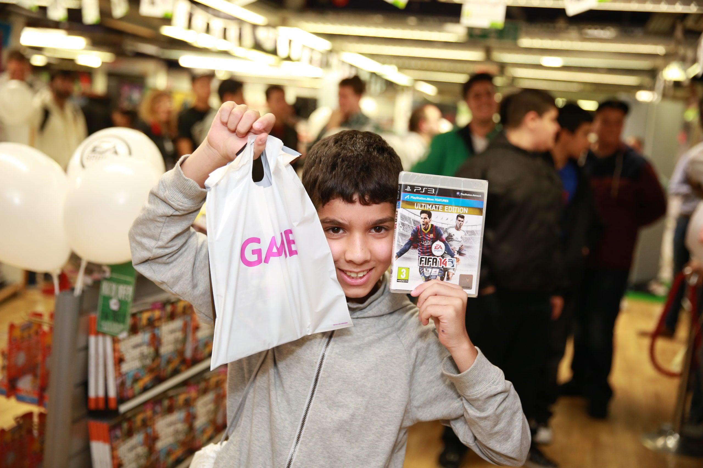
💬 评论最高
本期评论数最高(2294),是较突出的玩法反信号。重度玩家正在用消费投票拒绝大体量全价产品,理由集中在:内容贬值快、首发即打折周期、订阅制涌入、AAA 游戏体积失控。对所有研发「卖爆内容量」的项目而言,是不便忽略的雷达提示。
📐 视觉模板
- 新闻 headline 截图模板:文字数据型 meme,无图也能上榜——证明数据本身就是情绪载体
- 可联想到:游戏内成就/统计数据做成 headline 风格分享卡,玩家自发分享数据 = 隐形广告
😈 情绪结构
- ★ 集体觉醒/抵制情绪:「我们终于受够了」的群体共鸣;2294 评论 = 大量玩家在自我表态「我也是」
- 重度玩家子人群(15% 占比但发声密度高)共鸣度本期较强;郊区家庭玩家中性
🎭 角色原型
- 觉醒消费者原型:「从被动接受到主动拒绝」的玩家叙事弧
- 可联想到:把「拒绝全价」的玩家心态做成游戏内 NPC 剧本——商店大叔不再卖你装备而是劝你别买
🔄 Remix 机制
- X% of Y no longer Z 句式:「62% 玩家不再 [行为]」是数据型 UGC 模板,可套任何品类对比
- 玩家可自发整理「我今年没买的全价游戏」列表,评论区即数据库;较低成本群体研究
视觉 2/5
情绪 5/5
角色 3/5
Remix 4/5
A 契合度高
4
硬件特写 · 工艺崇拜
★ 直接游戏信号
16.4K 赞 + 898 评论的 r/gaming 强信号。玩家集体怀念 GameCube 八角摇杆护圈带来的「手感反馈精度」——这不是怀旧,是手感党的工艺崇拜。重要程度直追 #7 Steam Controller 售罄事件,两条联动表明:本周 r/gaming 的「手感至上」情绪较浓。乡镇蓝领 + 重度玩家双共鸣。
📐 视觉模板
- 硬件特写微距摄影:紫色塑料 + 灰色摇杆 + 八边形护圈纹理;产品物质感强,无文字加持
- 可联想到:游戏研发可以做「硬件/手柄设计纪录片」内容,工艺细节本身就是较高粘度内容
😈 情绪结构
- ★ 工艺细节崇拜:「当年工程师懂的事现在没人懂了」的失落感 + 「让我用手摸一摸」的物质温度
- 乡镇蓝领(修车工/电工/木工)共鸣较强:他们识别「好工艺」的眼睛比纯玩家更敏锐
🎭 角色原型
- 沉默工匠原型:设计这颗摇杆的工程师没人知道名字,但作品被 25 年后玩家自发致敬
- 可联想到:游戏内「隐藏工匠 NPC」叙事——主角发现某关键道具是 NPC 默默打磨多年的作品,主线带过即可
🔄 Remix 机制
- 「X should be way more popular」句式:万能怀旧推荐句,可套任何「被遗忘的好东西」
- UGC 鼓励玩家发「某游戏机制 / 某手柄按键 / 某老界面」致敬贴;评论区即「手感党博物馆」
视觉 4/5
情绪 5/5
角色 4/5
Remix 4/5
A 契合度高
5
游戏截图 · 玩家黑科技
★ 直接游戏信号
本期较纯粹的「钻规则反制」案例。玩家 Blurbss 利用 RDR2 物理引擎漏洞,用炸药当燃料把货车送上天,把开放世界西部游戏改造成「太空模拟」。197 评论里全是「接下来该试试 X」的脑洞接力——这是重度玩家典型的快乐源泉,也是「钻规则反制」在 UGC 端的较强印证。
📐 视觉模板
- 游戏内截图 + 顶部白字 caption:「Current Experiment: ROCKET TO THE MOON」+ 飞行中的货车 + 西部场景,反差较强
- 可联想到:研发可在游戏内提供「实验日志」功能,让玩家给自己的脑洞起 caption 并直接出图分享
😈 情绪结构
- ★ 钻规则的智识快感:「我比开发者更懂这个引擎」的征服感;重度玩家较深的 dopamine 来源
- 城市中产 + 重度玩家共鸣较强;乡镇蓝领可能觉得「没事找事但很酷」
🎭 角色原型
- 玩家科学家原型:把游戏当物理实验室;这种玩家是创作型核心用户,养住一个 = 养住一片二创社区
- 可联想到:游戏内设「黑科技家」NPC 角色,鼓励玩家利用机制做超出设计预期的事,并奖励而非惩罚
🔄 Remix 机制
- 「I turned X into Y using only Z」句式:「把 A 游戏改成 B 玩法只用 C 道具」——万能玩家黑科技 UGC 模板
- 玩家可自发产出「把 [开放世界游戏] 改成 [其他类型] 只用 [某道具]」系列;UGC 链路较长
视觉 4/5
情绪 4/5
角色 4/5
Remix 5/5
A 契合度高
6
三格漫画 · 经典 Genie 套路
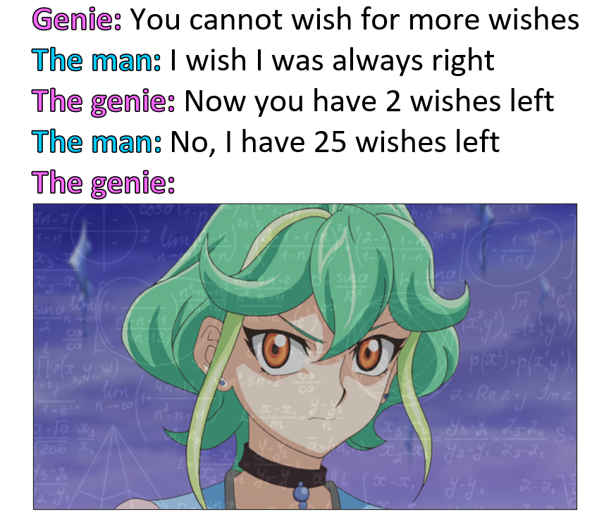
★ 直接游戏信号
经典 Genie 三段式 meme 的当周热门版本。Genie 拒绝「许愿要更多许愿」,但人物用「我希望我之前总是对的」把 1 个愿望换成 25 个——这是「钻规则反制」较纯粹的寓言。与 #5 RDR2 黑科技母题完全一致,但用语言/逻辑游戏呈现,门槛较低。
📐 视觉模板
- 三段式对话漫画:每段 1-2 句台词 + 角色头像;格式紧凑、阅读节奏快
- 可联想到:游戏内对话/任务系统可以借鉴这个三段反转节奏——给玩家「看似无路 → 找到漏洞」的瞬间快感
😈 情绪结构
- ★ 智胜系统的优越感:「我比规则制定者更聪明」的瞬间快感,是重度玩家较喜欢的情绪奖励
- 重度玩家 + 城市中产共鸣较强;乡镇蓝领对「钻空子」也有正面认知(「精明」)
🎭 角色原型
- Trickster 智者原型:「不是更强而是更聪明」的英雄类型;与 钻规则反制 强对应
- 可联想到:英雄技能不靠数值压制而靠「让对方的规则反过来作用于他自己」;策划方向上是个差异化 hook
🔄 Remix 机制
- 「X says no Y, but actually Z 转换成 25 个 Y」句式:万能钻规则段子模板
- UGC 玩家可自发产出「某游戏机制本意 vs 实际玩家利用方式」对照图;评论区即漏洞集萃
视觉 4/5
情绪 4/5
角色 5/5
Remix 4/5
A 契合度高
7
Steam UI 截图 · 行业新闻
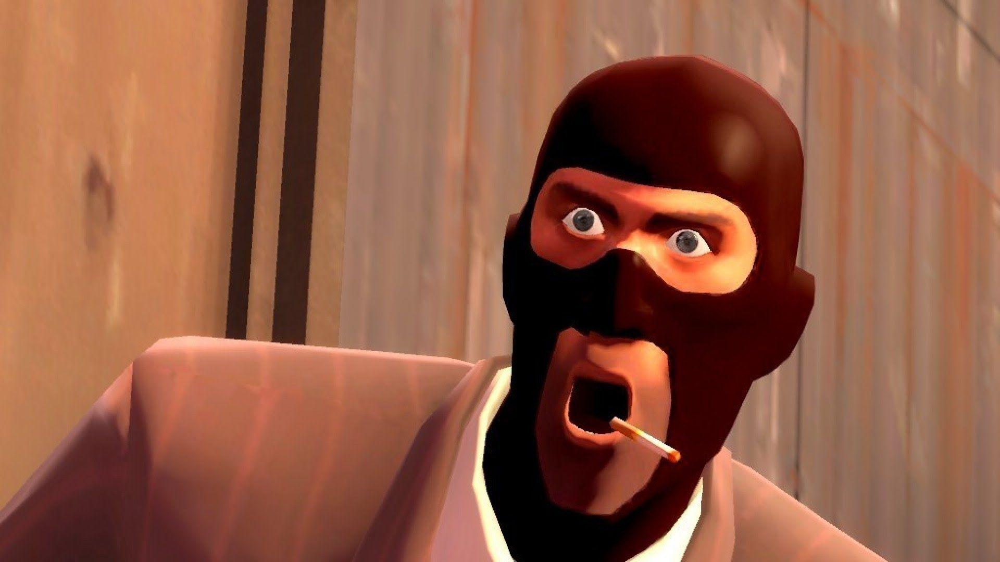
💬 评论第二高
1541 评论,本期 r/gaming 仅次于 #3 的高互动作品。与 #4 GameCube 八角摇杆形成「手感党觉醒」双源印证:玩家在用钱包投票,告诉行业「手感比花哨重要」。Valve 这次硬件回归说明老厂商也意识到这点。本条对游戏研发是「硬件/外设设计是值得投入的差异化方向」的较强信号。
📐 视觉模板
- Steam 客户端 UI 截图模板:左侧菜单 + 中部游戏库 + 加号涂鸦;玩家圈天然识别度较高
- 可联想到:游戏研发的成就/库存截图可设计成「较高识别度模板」供玩家二创
😈 情绪结构
- ★ 集体抢购的胜利感:「早就该回来」+ 「没抢到也开心」的复合情绪;玩家对 Valve 的信任度本周印证
- 重度玩家共鸣较强;郊区家庭/乡镇蓝领中性
🎭 角色原型
- 沉睡王者归来原型:Valve 多年不出硬件 → 一出即售罄,是「被放逐者归来」的反向版本
- 可联想到:游戏内「被遗忘的角色 / 被砍的机制」可作为「回归专版」内容卖点;情绪势能现成
🔄 Remix 机制
- 「X sold out in N minutes, breaking Y in the process」句式:万能抢购梗模板
- 玩家可自发产出「游戏内某限时活动击垮服务器」的对比截图,平台只需引导「晒服务器爆炸截图」话题
视觉 3/5
情绪 4/5
角色 4/5
Remix 4/5
B 结构借鉴
8
Family Guy 二创 · 角色 IP 嫁接
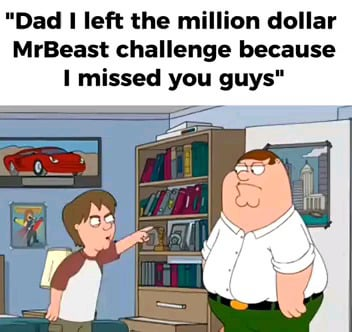
★ A 级信号
本期较强「角色 IP × 觉醒错向」信号。Invincible 主角 Mark 被父亲(Omni-Man,伪英雄实反派)嘶吼「THINK MARK THINK」的经典场景,已经成为欧美年轻男性观众文化暗号。本条嫁接到 Family Guy + MrBeast 主题虽然偏离原本怖意,但说明这个母题已是稳定的二创素材池。直接对应 觉醒错向。
📐 视觉模板
- Family Guy 嫁接式二创:把 Invincible 的台词强行套进 Family Guy 角色场景;二次元 + 卡通融合
- 可联想到:游戏研发可主动设计「可被玩家随意嫁接到其他 IP」的标志性场景/台词,作为 UGC 跳板
😈 情绪结构
- ★ 父子角色冲突张力:「本可成为英雄的儿子 vs 早已堕落的父亲」是欧美年轻男性较深的文化母题之一
- 重度玩家(动漫粉)+ 城市中产共鸣较强;乡镇蓝领郊区家庭中性偏好奇
🎭 角色原型
- ★ 觉醒错向英雄原型:Mark 是「被善意误导走向反派父亲道路」的觉醒者;与 完全对应
- 可联想到:游戏主角设定为「有反派血脉但选择良知」的角色,能在 25-35 男性中吃到 Invincible/JoJo/My Hero Academia 三大 IP 的现成情感势能
🔄 Remix 机制
- 「THINK [角色名] THINK!」句式:玩家可对任何犹豫不决的角色喊话;UGC 模板已成熟
- 卡通嫁接式二创门槛较低(拼图层即可),玩家可把游戏角色 P 进 Invincible 场景作致敬图
视觉 3/5
情绪 5/5
角色 5/5
Remix 4/5
A 契合度高
9
Soulslike 美术 · 自嘲对比
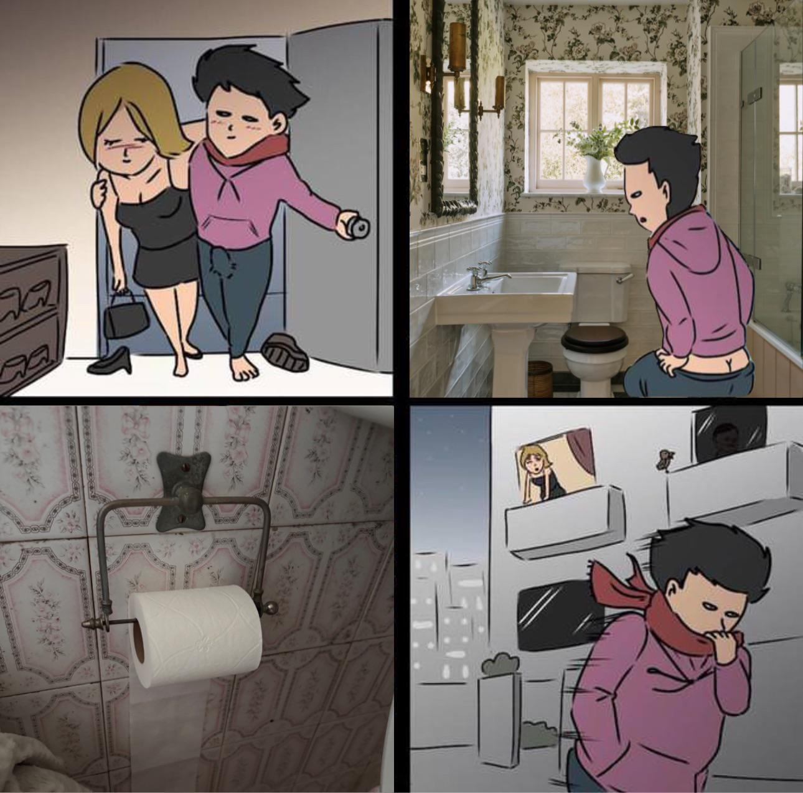
高能共鸣
9.3K 赞、192 评论的稳定 Soulslike 玩家文化作品。把 Elden Ring 巨人 NPC 套用到「flirting skill 不严肃 vs 严肃」对比上,自嘲意味较浓。Soulslike 玩家「Die. Learn. Return.」的世界观已渗透进生活段子。直接对应「Roguelike 永生」的玩家心态侧。
📐 视觉模板
- 同图两区域对比 + 文字对照:上区域「不严肃」、下区域「严肃」;用 Elden Ring 美术做情绪载体
- 可联想到:游戏内可以提供「同场景两种状态」官方 meme 模板,方便玩家直接拿去发对比图
😈 情绪结构
- ★ Soulslike 自嘲精神:「我活着就是为了受苦」的优雅丧;玩家社群较高认同的核心情绪
- 重度玩家共鸣较强;乡镇蓝领有共鸣(生活就是受苦);郊区家庭中性
🎭 角色原型
- 不语巨人原型:Elden Ring 巨人系角色被反复用作 meme = 「沉默的强大」的吸引力依然在线
- 可联想到:英雄设计中「沉默到几乎不说话但战斗时较强」的反差是较突出的差异化方向
🔄 Remix 机制
- 「My X when [easy] / My X when [serious]」句式:万能两态对比模板,可套任何技能/态度
- 玩家可用任何游戏内「同角色两种状态」截图复用此模板;UGC 门槛较低
视觉 4/5
情绪 4/5
角色 4/5
Remix 4/5
A 契合度高
10
Incredibles 二创 · 动漫粉自嘲
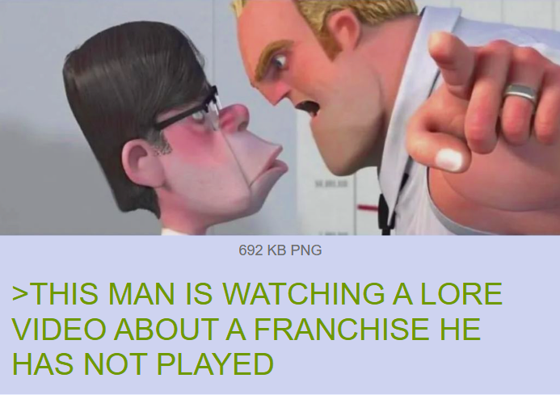
升级/演化
10.2K 赞 + 171 评论。本条揭示一个被低估的玩家细分:「不玩游戏只看 lore」的纯叙事消费者。Warhammer 40K 因为入坑门槛较高(贵 + 复杂 + 慢),衍生出庞大的 lore-only 观众群——这群人在 YouTube 看几小时 lore 视频比真正玩游戏更频繁。对游戏 IP 来说意味着「叙事可以独立打包变现」。
📐 视觉模板
- Incredibles 二创模板:上区域 Edna Mode 看着 Mr. Incredible 的画面 + 文字 caption;该模板已成为「指着别人调侃」的标准载体
- 可联想到:游戏研发可主动产出「被调侃的玩家原型」视觉,培养玩家自发玩梗
😈 情绪结构
- ★ 自嘲式入圈仪式感:「我虽然不玩但我很懂 lore」的圈层认同;近年欧美男性玩家的新常态
- 重度玩家(叙事派)+ 城市中产共鸣较强;乡镇蓝领可能觉得「瞎折腾」
🎭 角色原型
- 叙事消费者原型:把「lore 党」当作独立用户类型设计——他们不要玩,只要被「讲故事」;与 NPC 剧本觉醒「拿到自己剧本」的反向
- 可联想到:游戏官方可单独产出「lore-only」内容线(漫画/广播剧/独立 cinematic),不要求玩家进游戏即可消费
🔄 Remix 机制
- 「>this man is watching X he has not Y」句式:万能自嘲 + 调侃他人模板
- 玩家可自发拿这个模板调侃身边「lore 党朋友」;UGC 较低成本,传播链长
视觉 3/5
情绪 4/5
角色 4/5
Remix 4/5
B 结构借鉴
数据总览upvotes 排行
| # | 标题 | 来源 | 赞数 | 评论 | 格式 | 评级 |
|---|---|---|---|---|---|---|
| 1 | "Target acquired" | r/memes | 71.2K 🏆 | 333 | 对比图 | B |
| 2 | "Even tho I can't download you..." | r/gaming | 21.6K | 1089 | 手机截图 | A |
| 3 | "62% hardcore players no longer buy" | r/gaming | 11.5K | 2294 🏆 | 新闻截图 | A |
| 4 | "GameCube octagonal thumbstick gate" | r/gaming | 16.4K | 898 | 硬件特写 | A |
| 5 | "RDR2 space sim with dynamite" | r/gaming | 12.5K | 197 | 游戏截图 | A |
| 6 | "Loopholes! People, loopholes!" | r/dankmemes | 7.5K | 127 | 三格漫画 | A |
| 7 | "Steam Controller sold out in 30 min" | r/gaming | 12.2K | 1541 | UI 截图 | B |
| 8 | "THINK MARK THINK!" | r/memes | 9.7K | 69 | Family Guy 二创 | A |
| 9 | "Just to suffer" (Elden Ring) | r/memes | 9.3K | 192 | 自嘲对比 | A |
| 10 | "I am watching warhammer 40k" | r/dankmemes | 10.2K | 171 | Incredibles 二创 | B |
🔥 US Google Trends · 文化热点情报
美区热搜 Top 10
本期采集 2026 年 4 月下旬至 5 月初的美区 Google Trends，叠加业内时事人工补全，落到 10 条话题。本板块优先级为「玩法/活动 > 角色设计 > 广告创意」——比起把别家 IP 角色直接搬过来，更先看哪些机制和活动结构可以参考。所有 game-analysis 必须挂回 16 候选概念或 7 复合方向，无强匹配的维度允许留白，避免硬编。数据来源：pytrends `trending_searches(US)` + 业内时事人工补全（Variety/Deadline/WHO/ESPN/Reuters）+ 图片资产固化（`trend_images/0N_{slug}_{1,2,3}.jpg` 即权威话题清单）。
📅 数据周期 2026.04.23 – 05.07
🌎 地区 美国
📊 来源 Google Trends + 人工筛选
🎮 视角 游戏研发 · 内容情报
本期热搜 游戏研发结论
优先级：玩法 > 角色 > 广告
活动/玩法方向
Forza Horizon 6 东京赛道、Subnautica 2 早访建造、007 First Light 反规则潜行三款主推游戏构成本期「玩法蓝本」三角：东京弯道 + UGC 改装把 亲手打造推向高分辨率呈现；Subnautica 2 把 崩坏中重建秩序拉进开放愿望单榜首,证明深海/末世建造对欧美核心玩家仍是流量入口；007 起源故事则把 钻规则反制与 反追踪验证为 AAA 级可投资方向。The Pitt S2 实时叙事与FIFA 世界杯 48 队倒计时提示运营层：可考虑「实时事件追平 + 跨国阵营赛季」的活动结构,而非长线签到。
角色设计方向
Andy Sachs 中年回归（Devil Wears Prada 2）与young James Bond 起源（007 First Light）构成本期最具拼接价值的两组角色信号：前者把 底层逆袭重新校准为「成功后回到旧体系再战」的成熟弧；后者把 钻规则套进未成形的传奇人物,避免「一开局就是顶配英雄」的设计陷阱。Wembanyama 12 盖巨人原型是 Carry 幻想的真人化高光：身材压制 + 以一敌五的视觉奇观,对 6'8" 以上巨人/守卫者英雄的剪影、姿态值得参考。Beyoncé Act III 视觉觉醒提供「自我重塑/化身」的神性视觉符号,可为高阶皮肤或转职形态提供母题。
广告创意方向
主线钩子集中在两类母题：(1)「起源前夜」——007 与 Subnautica 2 都给广告提供了「他/它现在还不是后来那个样子」的悬念入口,可借鉴「黑屏独白 + 未成形装备/场景特写」结构；(2)「实时高强度」——Wembanyama 12 盖、The Pitt 实时叙事、世界杯倒计时都把「秒级紧张感」写进美区视觉文化里,可参考竖屏「多机位剪切 + 计时器叠层」做战斗/PVP 广告。Met Gala 红毯与Hantavirus 邮轮不直接转借,但提供色彩与氛围 mood-board。⚠️ Netflix-WB 收购属于行业宏观信号,本栏不输出广告借鉴方向,仅作行业现象记录。
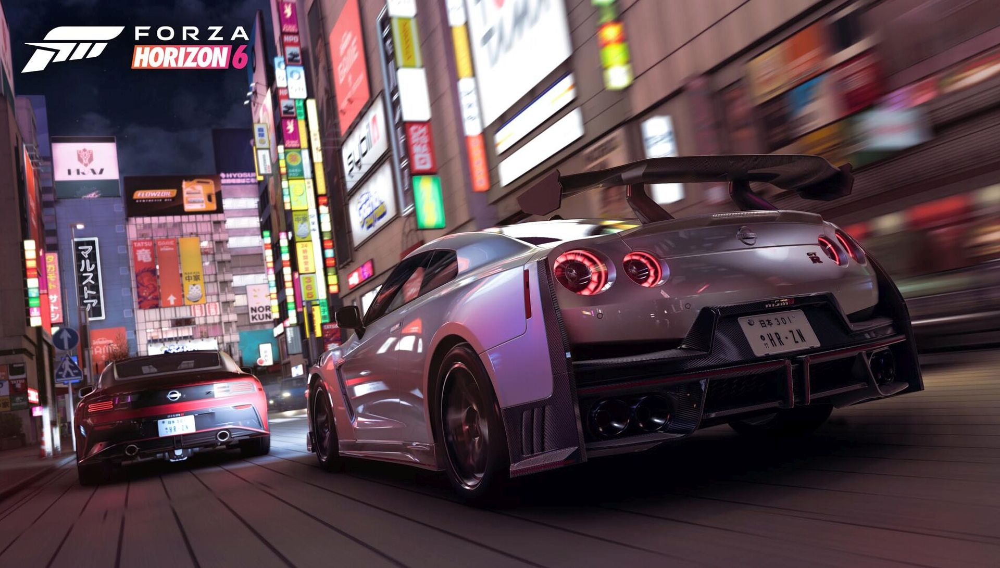
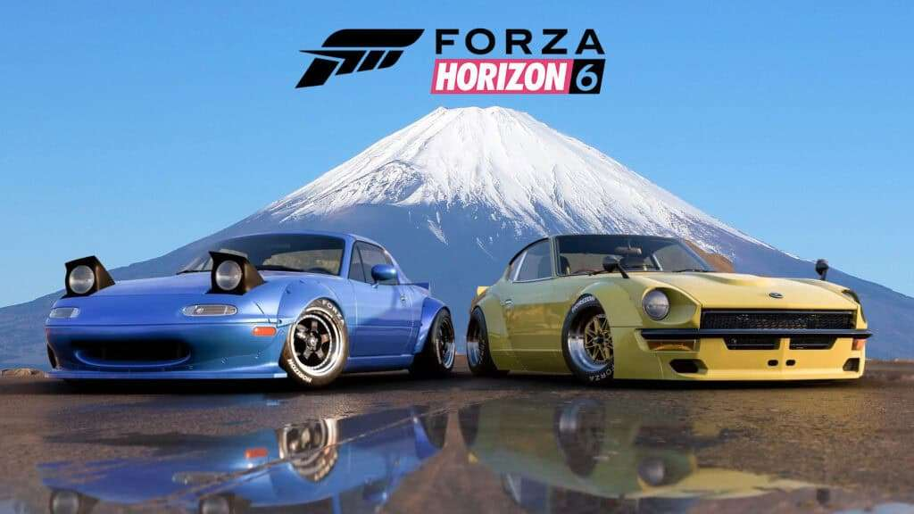
01
5M+ 搜索
- 5/19 上线 Xbox Series X/S + PC,Game Pass 首日入库；PS5 版同步官宣首次跨主机发售,被视为微软第一方策略转折信号。
- 系列首次以东京/横滨/富士山为主舞台,被外媒誉「系列最强日本地图」；预告片单日 YouTube 播放破 800 万,弯道改装与樱花季 livery 是 UGC 高频片段。
- Playground Games 强调本作 UGC 改装系统升级,玩家可拆解车辆面板/灯组/扰流件后再分享到社群,社区已经在猜测会出现首发 100 万+ 共享 livery。
🎭 角色设计
- '赛车文化角色化'：JDM 改装宅、Drift King、街头潮人——东京赛道把 4 类原型推到台前,可参考为「机械系英雄套装」的剪影来源
- '玩家化身=车主'：Forza 的"角色=车"逻辑提示卡牌/RPG 也可探索"装备外观决定阵营印象",避免角色立绘单调
- '白天潮人/夜里飙车手'：双状态人物典型——同一个角色白天通勤夜晚 underground race,关系互通
- 视觉关键词：霓虹 + 雨夜柏油 + 樱花飘落 + 排气蓝焰 + 改装车贴纸,是本期最有"东方未来感"的视觉调色板
⚔️ 玩法/活动
- '东京赛季'限时活动结构：参考 Forza Horizon 系列的 Festival Playlist,把"季节 + 主题地图 + 周任务"做成 4 周一循环,避免长线签到疲劳
- 'UGC 改装编辑器'：玩家可调装备/外观/部件并分享,社群点赞排名决定推荐位——可衍生出"装备工坊"系统,让重度玩家产出供轻度玩家消费
- '双状态切换'日夜玩法：白天合法竞速夜晚地下赛,资源/势力分层——可联想到「角色双身份」机制,关系网在两端互通
- '跨主机首发派对'：首次同步 PS5/Xbox/PC 发售意味着首发跨服活动可期,「跨阵营赛事」是个不错的引流起点
🎬 广告制作
- '东京湿夜霓虹特写'母题：竖屏开局 3 秒 = 雨水滴在车窗 + 引擎点火 + 涡轮喘息,对城市中产 25-35 男性最具召唤力
- '改装前 → 改装后'高对比：6 秒前后切片是 TikTok 高完播率公式,可参考做"角色升星前/后"差异化展示
- '驾驶席视角第一人称冲弯'：1 秒"我就在车里"代入感,重度玩家共鸣峰值
角色 4/5玩法 5/5广告 4/5适配 4/5
B 结构借鉴
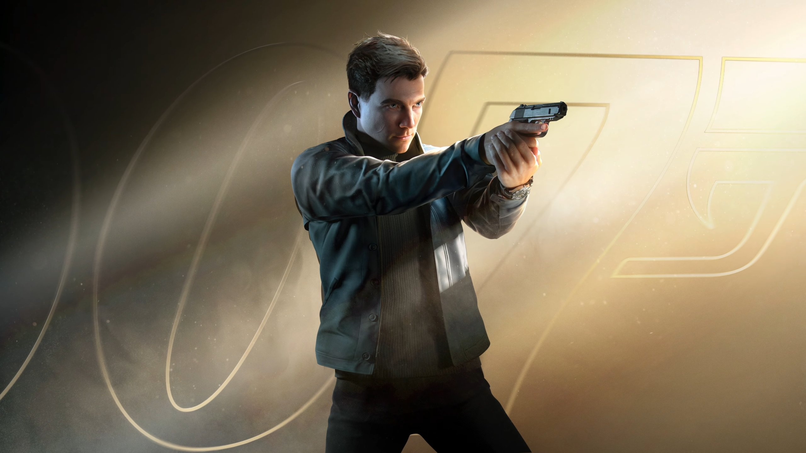
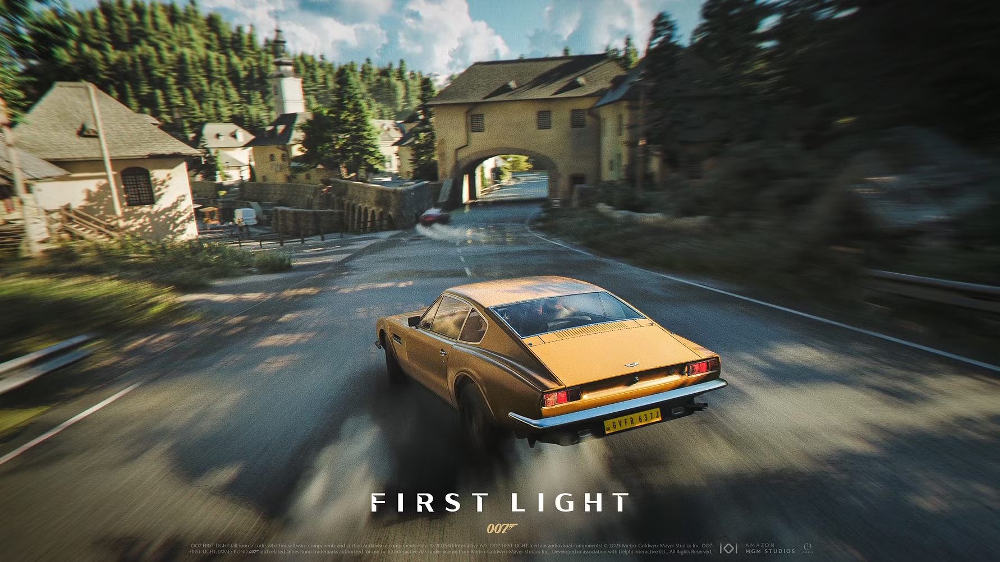
02
5M+ 搜索
- 5/27 全平台上线,Hitman 团队 IO Interactive 制作的 James Bond 起源故事,被欧美社区昵称「baby Bond」,预告片 IGN 单条播放 1200 万。
- 玩法承袭 Hitman 沙盒潜行 + 自由路径解密,新增「未被授权杀伤许可」时期的限制规则,强化「非致命/伪装/操控」三大轴。
- 制作人在 IGN 访谈强调：本作不是改编电影,而是「Bond 还没成为 007 之前」的人物弧——「他正在学如何成为传奇」是核心宣传角度。
🎭 角色设计
- '未成形的传奇'原型：Bond 在本作里还是新人——这个设定避开了"开局就是满级英雄"的设计陷阱,可参考为新英雄的"起源版本 + 满级版本"双卡设计
- '反派也是镜像主角'：IO 系列善用"目标 = 黑化的你"叙事,反派背景与主角动机互为镜像
- '女性角色 = 信息掮客'：MI6 接线员 / Q / Moneypenny 的 prequel 版本是"掮客型"女性塑造范本——不是花瓶也不是战斗员,是关系网中枢
- 视觉关键词：合身灰西装 + 不合身的 PPK 手枪 + 燃烧香烟 + 60 年代摩纳哥/伦敦霓虹,强化"年轻但已经穿成熟人衣服"的张力
⚔️ 玩法/活动
- '非致命路径'机制：Bond 还没拿到 license to kill,关卡硬约束鼓励潜行/伪装/操控——可参考为"低伤害高分支"的特殊关卡模式
- 'AI 守卫认知可视化'：IO 系列招牌——NPC 视野 / 怀疑度可见,玩家可主动操控 NPC 认知。是 7 在 AAA 端的较有代表性的实证
- '伪装身份切换'沙盒：穿上不同制服解锁不同区域——可联想到"双状态切换"在卡牌的形态：同一英雄不同装扮触发不同事件
- '新人考核'赛季活动：把"还不是 007"做成一个赛季——玩家通过任务积累 license 段位,最终升任真·007 解锁皮肤
🎬 广告制作
- '他还不是 007'开场：黑屏 + 老 Bond 经典配乐前 1 秒切到年轻 Bond 笨手笨脚换弹匣的失误特写,反差钩子直接命中 25-35 男性
- '潜行→失败→优雅补救'3 段式：6 秒展示"被发现 → 危机 → 优雅过关",是 IO 已经验证 10 年的钩子结构
- '看 NPC 视野线'特写：把游戏内 AI 警觉度可视化做成广告主画面,重度玩家立刻 get「这是 Hitman 团队做的 Bond」
角色 5/5玩法 5/5广告 5/5适配 5/5
A 契合度高
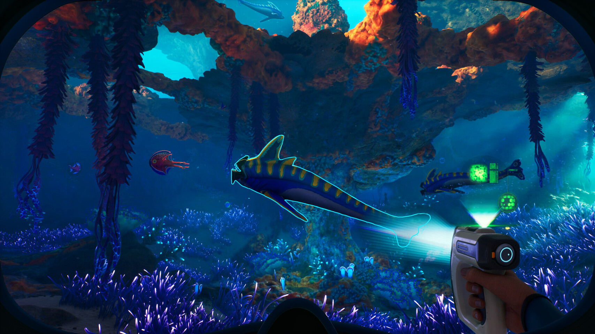
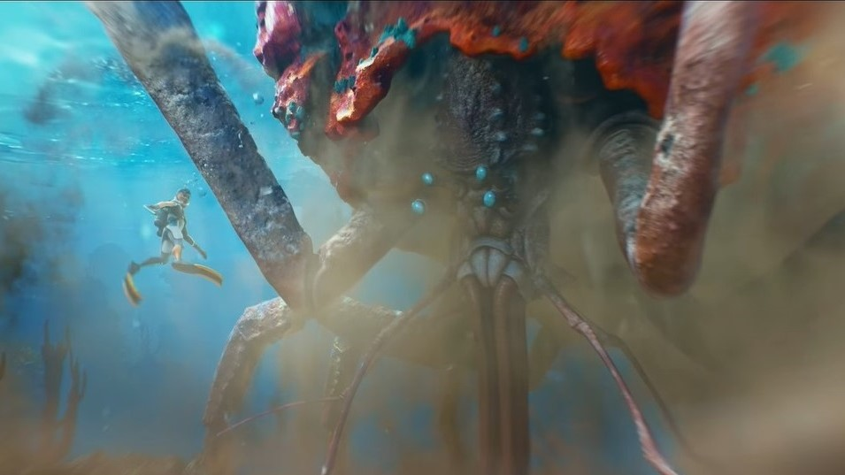
03
2M+ 搜索
- Steam 当前愿望单榜首游戏,本月 Early Access 开放；首部累计 1000 万+ 销量,续作首日 SteamDB 在线峰值预估破 25 万。
- 玩法延续「深海建造 + 探索 + 资源链生存」三件套,新增多人合作（最多 4 人）与可继承的基地遗产机制,被社群称为系列首次"代际玩法"。
- 开发商 Unknown Worlds 强调早访路线 12-18 个月,Reddit r/Subnautica 已有「玩家一起从零造一个海底联邦」的二创计划。
🎭 角色设计
- '孤胆深海工程师'原型：玩家不是战士而是工程师/科学家——可参考为「非战斗系核心英雄」立绘思路,避免全员剑士
- '船员遗物'角色叙事：前作典型设定——通过录音/PDA 拼出已死船员的人物弧。是一种轻角色重叙事的低成本方案
- 视觉关键词：荧光深海生物 + 焊接火花 + 玻璃舱内蒸汽 + 朱红色潜水服,是水下题材罕见的"末世+希望"调色板
⚔️ 玩法/活动
- '崩坏中重建秩序'主线：飞船坠毁→海底求生→建造海底联邦——直接命中,是本期最完整的体验闭环
- '代际继承'基地遗产：上一局留下的基地可以被下一局玩家发现继承——可联想到卡牌"前世账号遗产"机制
- '亲手造每一件设备'：从信号弹到潜艇全部玩家手工合成,每件物品有具体物理用途。是 在 PVE 端最干净的实现
- '4 人协作 + 任务分工'：4 人小队中每人擅长不同领域——可参考为"组队 PVE Roguelite"模式,避免单人重复
- '海底联邦'长线 UGC：玩家共建的基地可分享到社群,是一种"长线 UGC + 季节快照"运营
🎬 广告制作
- '利维坦阴影下方'恐惧钩子：竖屏 1 秒展示玩家小潜艇 + 屏幕底部一只巨大利维坦阴影掠过,是 Subnautica 系列 viral 视频公式
- '从零到海底基地'延时摄影：15 秒压缩 100 小时建造过程,对乡镇蓝领"亲手造"心智强烈共鸣
- '4 人深海合作翻车现场'喜剧：MOBA 式队友失误梗 + 海底氧气危机,重度玩家高完播率结构
角色 4/5玩法 5/5广告 4/5适配 5/5
A 契合度高
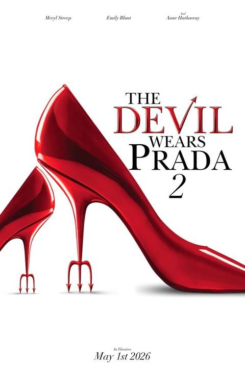
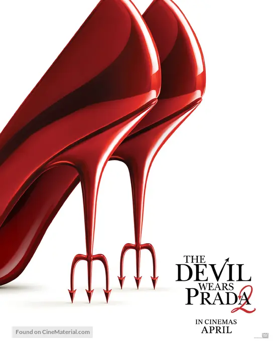
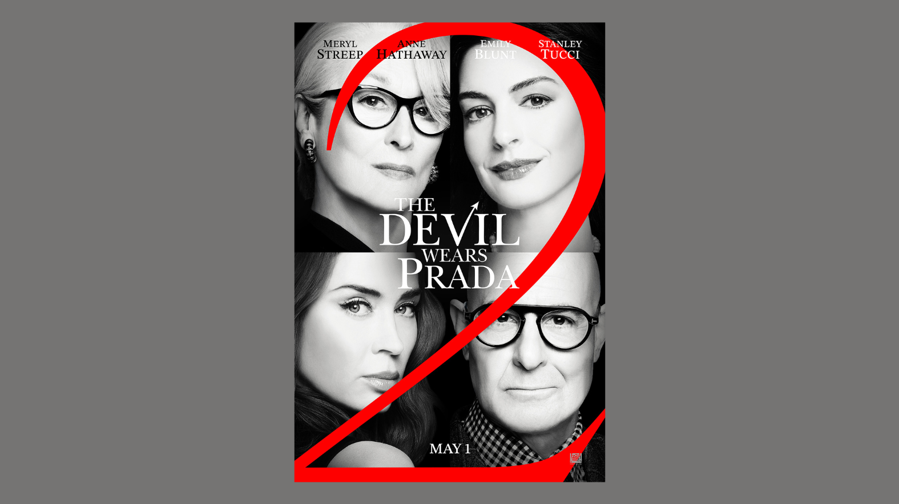
04
2M+ 搜索
- 5/1 上映,Anne Hathaway/Meryl Streep/Emily Blunt/Stanley Tucci 全员回归,开画两周北美 1.85 亿美元,IMDb 8.2 分。
- 剧情设定 20 年后：Andy 现已成中年记者,被任命 Runway 杂志特稿主管,再度被 Miranda 折磨；Meryl Streep 时尚教母回归被誉「年度最强出场」。
- 美区 25-40 女性观影率 68%,Z 世代男性意外成第二大群体——关注「老式职场霸气与新世代理念的冲突」。
🎭 角色设计
- '成功后回归旧体系'弧：Andy 已经逃离过 Runway,再选择回归证明她不再为求生——这种"成熟版 underdog"是欧美卡牌欠缺的角色弧
- '教母 + 弟子'双女性结构：Miranda + Andy 提供"互为镜像、互为牵制"的双 carry 结构
- 视觉关键词：高定西装、黑色高跟、金属饰扣、Vogue 印刷封面、白衬衫袖口血色立体妆,强化"权力衣装即护甲"母题
⚔️ 玩法/活动
- '职场剧本'重玩机制：参考"NPC 剧本编辑器"思路——玩家拿到 Andy 视角后可重写关键决策（接 Paris 邀请 / 拒绝 Miranda）,结局多分支
- '声誉资源'系统：信任与人际关系可累积可消耗——把人际网做成可观察资源
- '权力代价'线性事件：每次帮 Miranda 解决问题都失去某段私人关系——把 写进职场赛季
- '时尚月'UGC 活动：玩家自定义角色礼服参加虚拟 Runway——是个不错的女性向 UGC 活动起点
🎬 广告制作
- 'That's all'经典台词回归：Streep 的标志性结束语 + 镜头切到 Andy 翻白眼,6 秒钩子直接命中 1 亿+ 老粉
- '穿衣镜头蒙太奇'：3 秒展示 Andy 从衬衫 → 高跟 → 全装备完成蜕变,是时尚电影 viral 公式
- '老板眼神特写'威慑：Streep 不说话只看你 1 秒——重度玩家也会停下来看完
角色 4/5玩法 4/5广告 4/5适配 3/5
B 结构借鉴
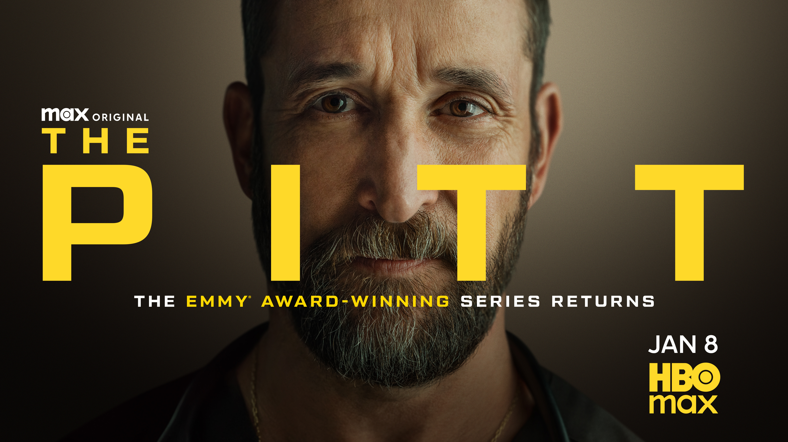
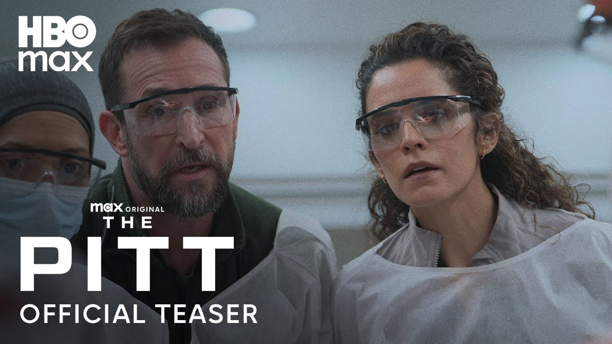
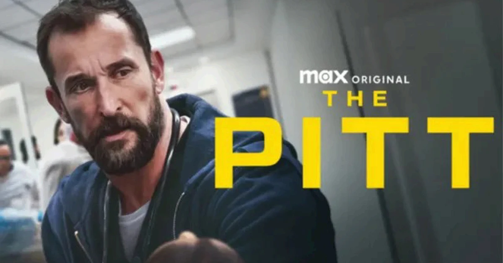
05
2M+ 搜索
- HBO Max 历来评价最高的剧集之一,S2 共 15 集刚刚完结；Noah Wyle 主演,被公认"ER 精神继承者"。
- 「每集 1 小时 = 急诊室一个小时」实时叙事 + 高强度团队协作,单集 R&P 评分均 9.0+,烂番茄 96%。
- 完结集美区 4500 万人次观看,社媒 #ThePitt 单日发文 28 万条；S3 已宣布 2026 秋季回归。
🎭 角色设计
- '老兵兄弟连'医务版：急诊室团队 = 精神战友——把 从军事题材剥离到日常职业,欧美用户接受度更广
- '无名英雄主角'反巨星：Robby（Wyle 角色）不是天才医生而是「最稳的那个」——可参考"Carry 不靠数值靠决策"英雄塑造
- '角色 = 一项手艺'：每个医务工是一种具体技能（外科 / 急救 / 麻醉）,不是"战职"——是 在角色设计端的样本
- 视觉关键词：白大褂血迹、急诊推车、医院荧光灯抖动、心电图屏幕、走廊跑步背影,强化"实时高强度"质感
⚔️ 玩法/活动
- '实时一小时'活动结构：参考 The Pitt 实时叙事——可设计"60 分钟限时关卡",所有事件按真实时间发生,无暂停
- '团队协作 + 角色分工'PVE：4 人小队每人对应一种手艺,缺一不可——避开"全队都是 DPS"的设计陷阱
- '每日案例'赛季任务：每天给玩家一个具体物理问题（救一个病人/解决一个故障）,手艺会贬值需持续训练
- '失败=代价'叙事：救不回来的病人留下永久 NPC 记录——把 用最低暴力的方式写进玩法
🎬 广告制作
- '急诊车门冲开'开场：3 秒主角推车冲入抢救室 + 倒计时叠层,命中实时高强度母题
- '团队对视无台词'：4 个医务工无言对视 1 秒决定行动——重度玩家立刻 get「这是协作游戏」
- '我们救不回他'沉默结尾：广告以失败 + 沉默结束——欧美用户对"承认失败"的剧集异常买账
角色 4/5玩法 5/5广告 4/5适配 3/5
B 结构借鉴
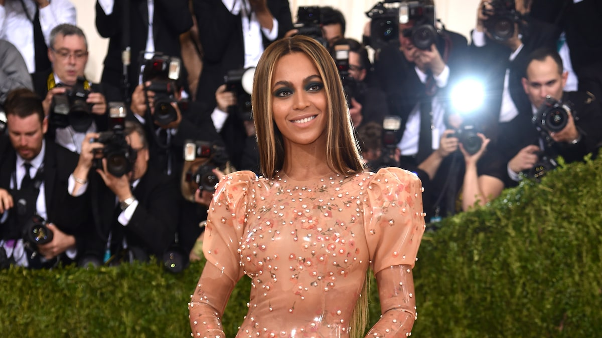
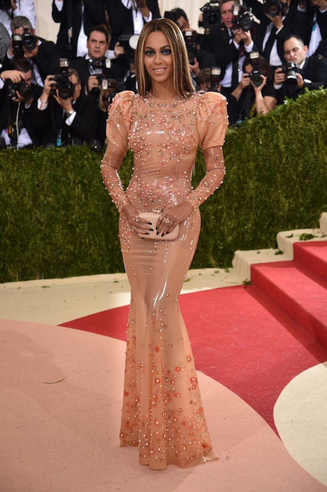
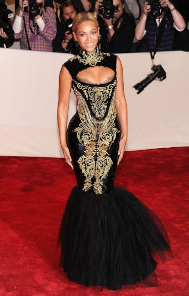
06
1M+ 搜索
- 5/4 Met Gala 红毯,Beyoncé 礼服细节激发粉丝对其新专辑 Act III 的猜测；Black swan 妆当晚 Google 搜索 Top1。
- 整场红毯 #MetGala2026 单日 X 平台帖子 920 万条,Blake Lively 变色礼服并列文化破圈话题。
- Act III 是 Beyoncé Renaissance 三部曲终章预告,社群普遍预测视觉主题为「神性 / 化身 / 觉醒」。
🎭 角色设计
- '自我重塑/化身'母题：Renaissance 三部曲的"觉醒"叙事可参考为高阶皮肤/转职形态——「同一英雄的神性版本」
- 'Black Swan'暗黑女性原型：当晚搜索 Top1 的妆容,是欧美对"有威胁感的优雅女性"明确买账信号
- 视觉关键词：金属羽翼、墨色烟熏、镜面材质、liquid metal 礼服、夜空蓝紫调,可作为高阶皮肤色板
⚔️ 玩法/活动
本条玩法维度关联较弱（红毯文化事件,无可直接借鉴的玩法机制）
🎬 广告制作
- '红毯慢镜变身'母题：3 秒红毯走位 + 礼服细节特写 + 转身——可参考为皮肤揭晓广告
- '专辑预告 + 视觉觉醒'结构：Beyoncé 的 tease 公式：先放抽象视觉信号让粉丝拼图,可借鉴为新版本 tease
- '暗色奢华质感'色板：墨色 + 金属可作为 25-35 城市中产女性受众皮肤的色彩参考
角色 3/5玩法 —广告 4/5适配 3/5
C 观察储备
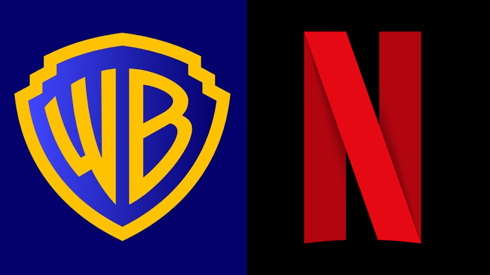
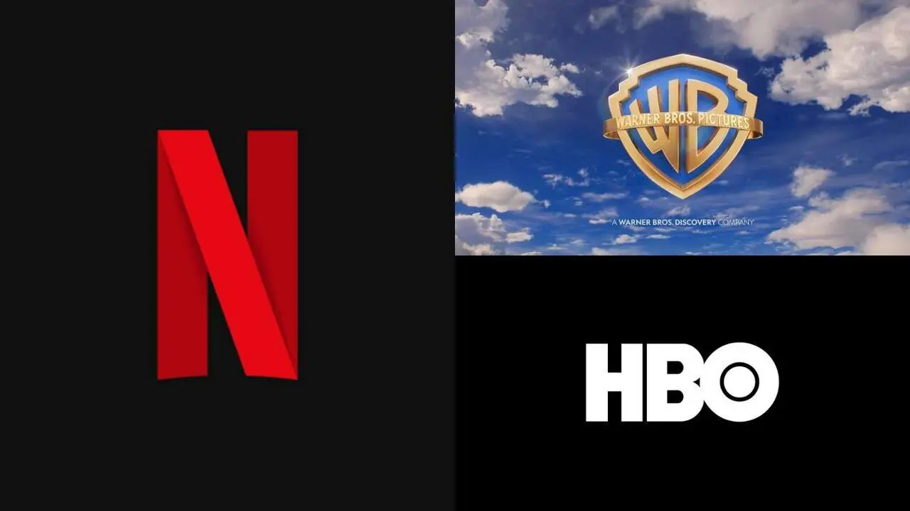
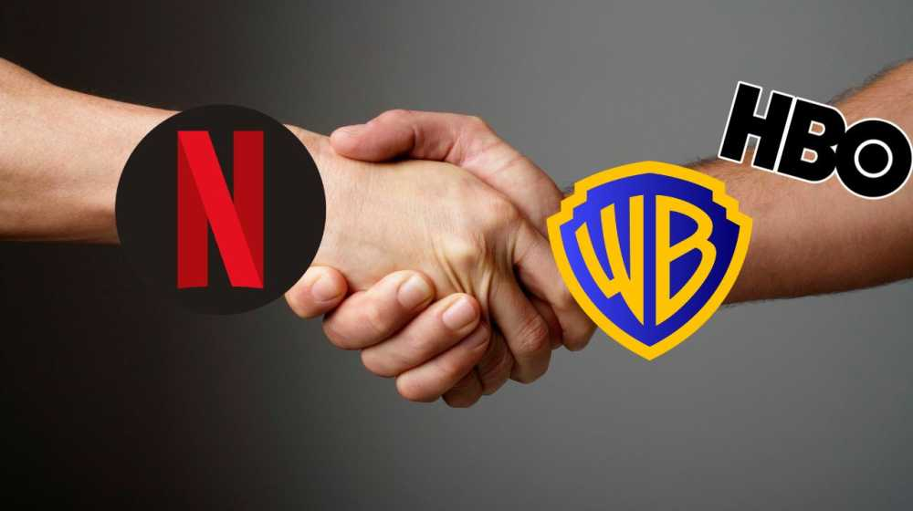
07
1M+ 搜索
- Netflix 拟收购 Warner Bros 的电影/电视/流媒体资产（含 HBO Max）,交易额 $82.7B,Q3 2026 closing。
- 十年来规模较大的媒体并购之一,意味着 Game of Thrones / Harry Potter / DC / Looney Tunes 等大 IP 将归 Netflix。
- 行业意义：流媒体寡头化加速,欧美原创剧投资继续向头部平台集中,独立剧空间受压。
🎭 角色设计
本条角色维度关联较弱（行业并购事件,无具体角色信号）
⚔️ 玩法/活动
- 'IP 跨平台联动'窗口收紧：未来 GoT / DC IP 联动谈判对象集中——把这个信号写进 24 个月路线图（提前布局合作）
- '原创内容'投资逻辑变化：流媒体平台减少 mid-budget 剧 → 自研游戏将面对更少的"中等热度可借鉴 IP",需要更多原创信号挖掘
- 'GoT 题材回潮预警'：Netflix 拿到 GoT 后大概率重启相关项目,西幻卡牌可提前规划"中世纪政治阴谋"主题赛季
🎬 广告制作
⚠️ 本条广告维度已留白（行业宏观信号,不输出广告借鉴方向,仅作行业现象记录）
角色 —玩法 3/5广告 —适配 —
C 观察储备
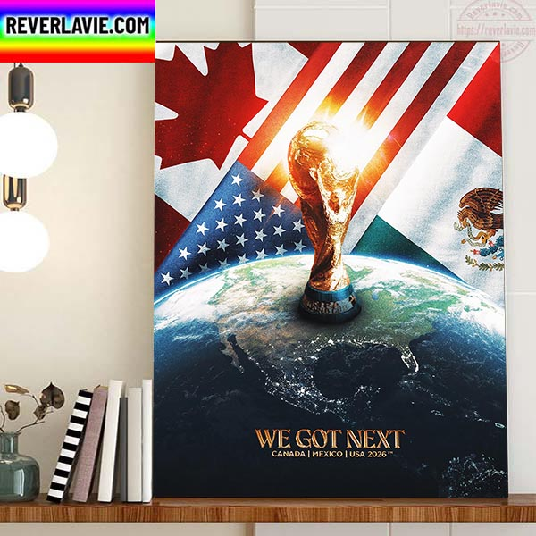
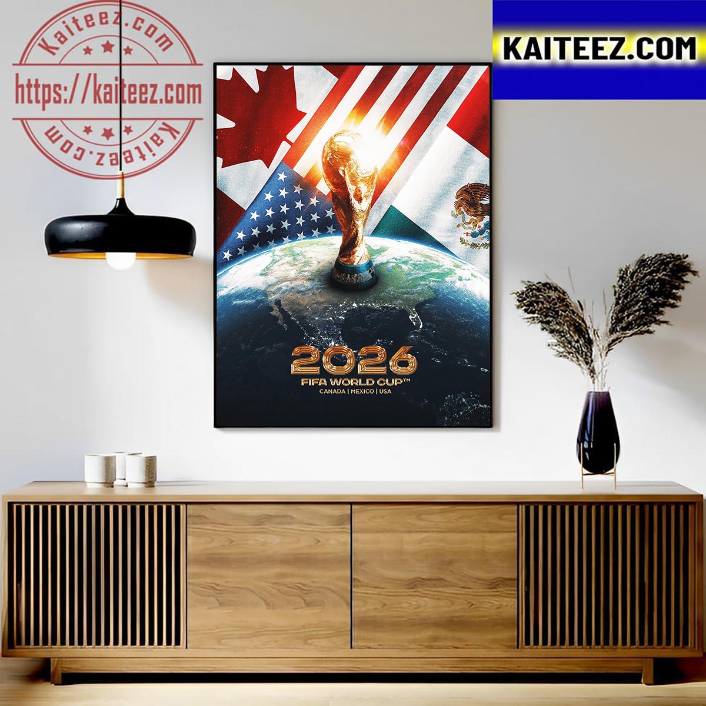
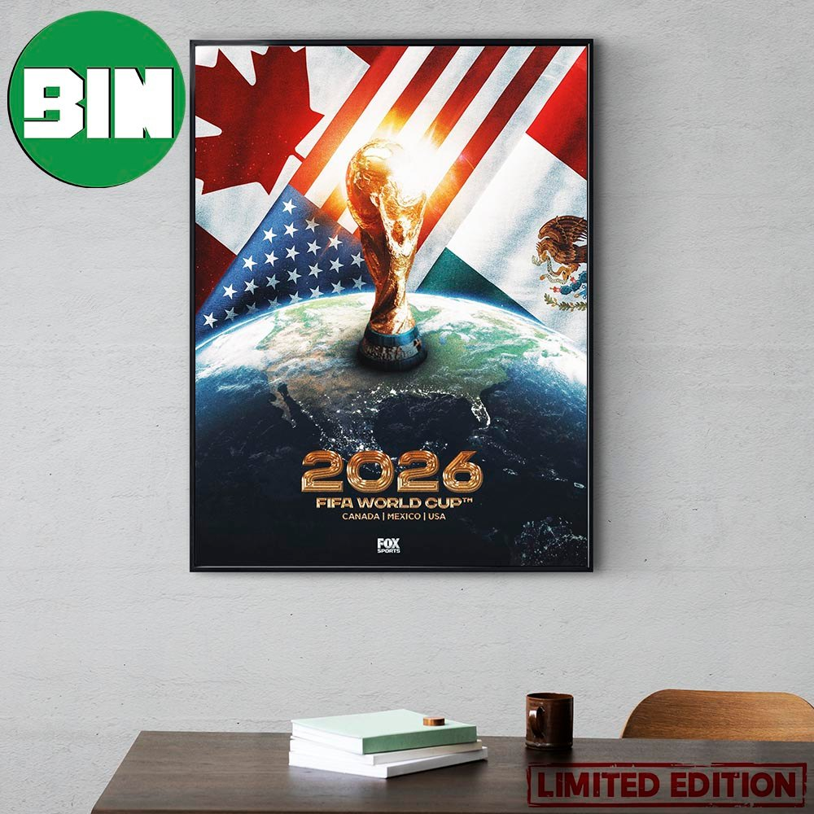
08
5M+ 搜索
- 6/11 - 7/19 举办,首次三国联办 + 首次 48 队参赛（原 32）；开幕墨西哥 vs 南非于阿兹特克体育场。
- 美国男足 26 人名单将于 5/26 公布；开普角维德/库拉索/约旦/乌兹首次入围,欧美社区对"小国黑马"叙事高度兴奋。
- 全球预测累计观众 60 亿+,门票二级市场单价已飙至历史峰值,美区社媒 #WorldCup2026 预热单周帖子破 1200 万条。
🎭 角色设计
- '国家阵营英雄'原型：48 队意味着 48 种文化原型——可参考为「国家阵营英雄」的设计起点（不必照搬足球）
- '小国黑马'叙事：开普角维德/库拉索首次入围——是 在国家级别的较突出的样本
- 视觉关键词：球衣彩色饱和度、国旗刺青、汗水高光、球场草地纹理、看台彩纸海,是"集体荣耀"母题色板
⚔️ 玩法/活动
- '赛季 = 一届世界杯'活动结构：6 周对应一个赛季,分小组赛 → 淘汰赛阶段,玩家选阵营累积积分——是个不错的全球阵营赛起点
- '国家应援'队伍系统：玩家可绑定一个国家阵营,赢得团体奖励——参考世界杯应援文化
- '黑马奖励'机制：选小国阵营有差异化奖励——奖励"勇气而非数值",避免大阵营垄断
- '实时竞赛 + 直播间'：参考世界杯期间的"边看比赛边打游戏"行为,可设计 watchparty 同步活动
- '碎片收集 = 球员卡'：把世界杯收集卡情怀复用为游戏内"英雄卡碎片"——是 25-35 男性熟悉的收集语义
🎬 广告制作
- '国旗特写 + 心跳音'开场：1 秒展示国旗 + 心跳采样配乐——命中 60 亿观众情感锚
- '小国进球 + 看台沸腾'：参考世界杯历史 viral 时刻结构 = 小国进球 + 解说颤抖
- '倒计时 + 手腕表'：剩多少天就用一帧手腕表特写带过——简洁有力
角色 4/5玩法 5/5广告 4/5适配 4/5
B 结构借鉴
09
1M+ 搜索
- 5/2 WHO 通报,荷兰邮轮 MV Hondius 从阿根廷开往佛得角期间爆发严重急性呼吸道疾病。
- 5/6 已 3 死 8 例疑似（2 实验室确诊）,罕见 person-to-person 传播被关注,引发欧美对「封闭空间疫情」的二次警觉。
- Reddit r/Outbreaks 单条 24 小时 6 万+ 评论,主流情绪从恐慌逐渐转向「现实版末世场景」的二创讨论。
🎭 角色设计
本条角色维度关联较弱（公共卫生事件,不直接借鉴具体人物原型）
⚔️ 玩法/活动
- '封闭空间末世'PVE 母题：邮轮场景 + 不可见敌人是 的高密度变体——可参考为限时副本场景,玩家在受限空间内重建秩序
- '信任作资源'机制实证：疫情场景中谁能信任 = 最贵的判断——把 写进剧本副本是个不错的尝试
- '分阶段崩坏'叙事节奏：参考真实疫情升级节奏（3 死 → 8 例疑似 → 全船隔离）做关卡推进——避免"瞬间末世"的廉价感
🎬 广告制作
⚠️ 本条广告维度已留白（疫情事件文化敏感,不输出广告借鉴方向,仅作末世母题情绪信号观察）
角色 —玩法 4/5广告 —适配 3/5
C 观察储备
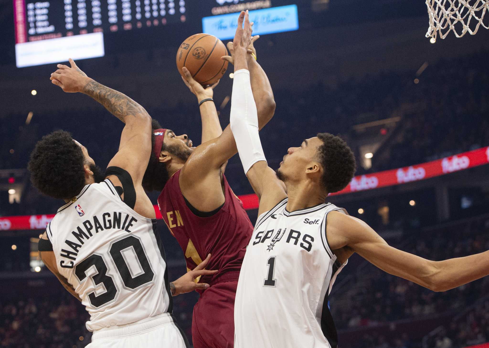
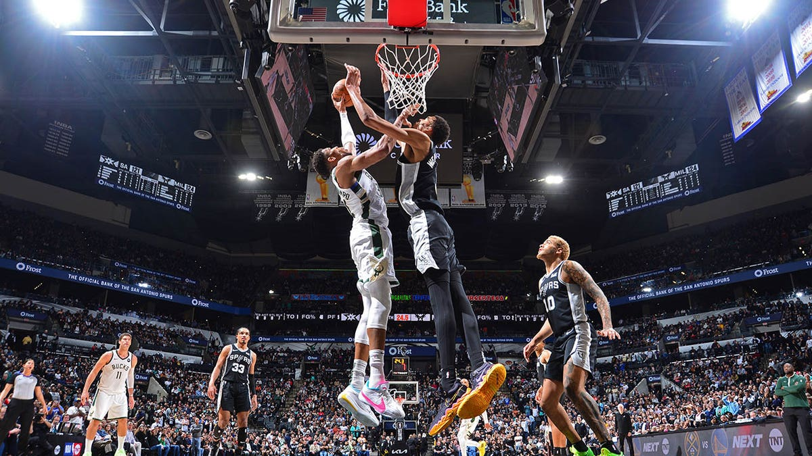
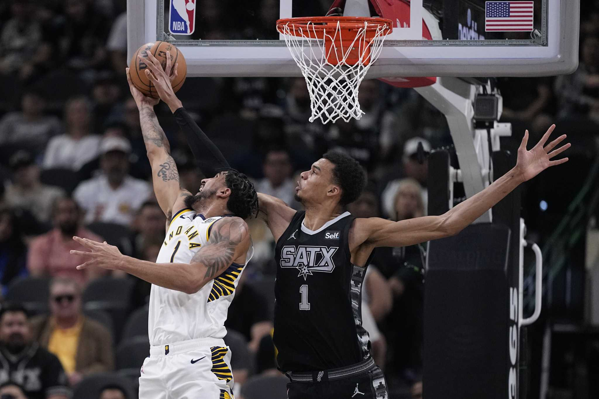
10
2M+ 搜索
- 5/4 西部半决赛 G1,马刺 vs 森林狼,Wembanyama 单场封盖 12 次破历史季后赛纪录（最终森林狼客场绝杀）。
- 法国 7 尺 4 内线在 NBA 第 2 季的统治力图腾,社媒 #Wembanyama 单日发文 360 万条,YouTube 集锦 24 小时播放 8000 万。
- 美区 ESPN 评论员普遍把他与 Bill Russell / Hakeem 并列；防守端的「画面奇观」直接刷新观众对身高/臂展的视觉极限。
🎭 角色设计
- '巨人/守护者'原型：7 尺 4 + 8 尺臂展把"防守型 Carry"做成视觉奇观——可参考为高大守卫者英雄的剪影/姿态
- '画面级身材压制'：Wembanyama 站在对手身边的"画面落差"本身就是设计语言——可参考英雄立绘比例
- '非主角的 Carry'：他是马刺真核但外貌不是传统帅哥英雄——证明欧美对"非帅哥型 Carry"接受度高
- 视觉关键词：超长臂展剪影、防守姿态、汗水反光球场地板、白色护腕、击掌瞬间,可作为"防守型 Carry"动作集
⚔️ 玩法/活动
- '以一敌五'PVP 模式：参考 Wembanyama 单防能力——可设计「1v5 守卫者」非对称 PVP 模式
- '封盖 = 高光时刻'机制：把"防守动作"做成可直接广告化的高光帧——避免"防守=被动=无聊"的设计陷阱
- '季后赛纪录'赛季活动：参考 NBA 季后赛纪录追逐文化,做「破纪录排行榜」周活动
- '巨人 + 队友 carry'双 carry 结构：Wembanyama 不能单挑赢但能让队友赢——可联想到 的"双核心"实现
🎬 广告制作
- '防守视角第一人称'：3 秒主角伸臂封盖镜头 + 慢动作球被拍飞——重度玩家立刻共鸣
- '身高剪影对比'：1 帧把巨人剪影叠在普通人旁边——简洁有力的"压制感"
- '统计数字弹出'：参考 NBA 集锦视频公式 = 比赛画面 + 实时数据弹层——竖屏适配性强
角色 4/5玩法 4/5广告 4/5适配 4/5
B 结构借鉴
| Rank | Topic EN | Topic ZH | Traffic | Category | 挂接概念 | Score (R/P/A/F) | Label |
|---|---|---|---|---|---|---|---|
| 01 | Forza Horizon 6 | 极限竞速:地平线 6 · 东京赛道揭晓 | 5M+ | gaming | 亲手打造 + 守家 | 4 / 5 / 4 / 4 | B 结构借鉴 |
| 02 | 007 First Light | 007:初露锋芒 · IO baby Bond | 5M+ | gaming | 钻规则 + 反追踪 | 🏆 5 / 5 / 5 / 5 | A 契合度高 |
| 03 | Subnautica 2 | 深海迷航 2 · Steam 愿望单榜首 EA | 2M+ | gaming | 亲手打造 + 重建秩序 | 4 / 5 / 4 / 5 | A 契合度高 |
| 04 | Devil Wears Prada 2 | 穿普拉达的女王 2 · 20 年后归来 | 2M+ | film | 底层逆袭 | 4 / 4 / 4 / 3 | B 结构借鉴 |
| 05 | The Pitt S2 Finale | 急诊室 第二季完结 · HBO Max | 2M+ | tv | 亲手做 + 兄弟连 | 4 / 5 / 4 / 3 | B 结构借鉴 |
| 06 | Beyoncé Met Gala + Act III | Met Gala 2026 礼服暗示新专辑 | 1M+ | culture | 视觉觉醒（弱直接） | 3 / — / 4 / 3 | C 观察储备 |
| 07 | Netflix–Warner Bros Deal | $82.7B 媒体大并购 | 1M+ | industry | 行业宏观 | — / 3 / — / — | C 观察储备 |
| 08 | 2026 FIFA World Cup | 美加墨 48 队世界杯倒计时 | 5M+ | sports | 全球 IP 运营 | 4 / 5 / 4 / 4 | B 结构借鉴 |
| 09 | Hantavirus Cruise Outbreak | MV Hondius 邮轮汉坦病毒疫情 | 1M+ | health | 末日母题（ 现实版） | — / 4 / — / 3 | C 观察储备 |
| 10 | Wembanyama 12 Blocks | NBA 季后赛 12 盖纪录 | 2M+ | sports | 巨人原型 | 4 / 4 / 4 / 4 | B 结构借鉴 |
📢 广大大 GUANGDADA.NET · 多平台游戏广告情报
全球游戏 Top Ads · 人气值 Top1% · 当日热榜
来自广大大展示广告热榜，筛选条件：人气值 Top1%、品类限角色扮演/策略/益智/动作/模拟/冒险/射击/消除，时间窗口覆盖 7/30/90/近 1 年。Top1% 意味着全平台人气前 1% 的高效素材，参考价值较高。每条按游戏研发灵感 SOP 拆解，优先级：广告钩子 > 玩法留存 > 角色。
📅 数据日期 2026-05-07
🏆 筛选条件 人气值 Top1% · 当日热榜
🌐 平台覆盖 Google / AppLovin / UnityAds / TikTok / Mintegral / IronSource
📢 展示数量 10 条精选
📊
关于数据来源
以上 10 条来自广大大展示广告热榜（已剔 1 条 HTML-only 与 1 条同 App 重复，共 12 → 10）。条件：人气值 Top1% + 游戏分类（角色扮演/策略/益智/动作/模拟/冒险/射击/消除）+ 时间窗口（7/30/90/近 1 年）。本期渠道偏向 Google / AppLovin / UnityAds / TikTok / Mintegral / IronSource，以美区休闲爆款为主，含 1 条长青头部 IP（Sonic Dash · 944K 展示估值）。指标说明：人气值 = 平台热度综合评分；展示估值 = 广告展示量预估；热度 = 近期投放活跃度。视频素材通过 CDP 从广大大详情页提取并下载本地，10/10 条含可播放视频。
本期热门广告 游戏研发结论
优先级：广告钩子 > 玩法留存 > 角色
广告制作方向
本期值得关注的钩子信号：「亲手做出来 + 即时变美」反差钩子是高频共性——Anime Dress Up 用 15s 跑完「素颜 → 上妆 → 完整造型」、Matchcreek Motors 用 30s 跑完「破车 → 喷漆 → 改装完成」、Grill Sort 用 59s 跑完「混乱 → 分类 → 满屏整齐」，三条都是「前 2s 难看 → 中段操作 → 末段视觉满足」的同一个钩子骨架。Sonic Dash 944K 展示估值是本期投放怪物，长青跑酷 IP 用 35s 经典横版跑酷切片证明「玩法即钩子」仍能跑量；Coin Master 59s 长素材主打社交博弈氛围（攻击好友建筑 + 旋转老虎机），是品类头部稳态投放范本。Playground Mod「沙盒物理破坏」前 2s 玩偶被砸即抓住眼球，是 indie 沙盒类典型钩子。
玩法/留存方向
本期 6/10 条挂在 「亲手打造修复」母题下：Anime Dress Up（妆造）/ Matchcreek Motors（车体）/ Grill Sort（厨房分类）/ Jigsawscapes（拼图）/ Obby Chapters（关卡逃脱）/ Coin Master（建村）。共性是「输入操作 → 即时视觉变化 → 一次性满足回路」，多数 30s 内能跑完一个最小可视循环。Gossip Harbor 是本期最值得拆的复合结构：merge 玩法外壳 + 八卦剧情挑唆作为留存钩，validates「玩法本身较常规 + 故事线塞住空挡」是欧美 merge 品类的当前解（ 剧本编辑器方向可借鉴叙事密度）。Sonic Dash 944K 展示估值再次提示「跑酷品类长青」是底层信号——西幻卡牌可考虑把「角色冒险动画」做成跑酷式自动循环作为副玩法弹药。
角色设计方向
本期角色侧出现 「亲手造角色」的明确信号——Anime Dress Up 把妆造过程做成 15s 速览（眼妆 → 唇彩 → 服饰 → 发色 → 整体），是「角色不是给的，是玩家做出来的」反固化角色绑定的核心案例（ + 凭证经济：玩家造的形象本身可观察可炫耀）。Sonic Dash 长青蓝刺猬 IP 验证「辨识度极强的单一招牌动作」（高速横向冲刺）能撑 12 年，是 mascot 角色设计的反向范本。Coin Master 维京/海盗/埃及多主题角色矩阵，用「换皮主题轮换」延长品类生命周期；Obby Chapters 走 Roblox 风格 lowpoly 角色，承接 9-15 岁低龄用户。Sheep Dash / Playground Mod 物理恶搞角色无情感载体，仅工具属性，无角色信号。
1
Top1%
人气 1125
1125
人气值
59s
创意时长
1天
投放天数
Top1%
排名
广告研发分析
- 混乱→整齐反差钩子：开场 2s 烤架混乱堆叠，引发观众「我能整理好」的强迫症代入
- 分类操作即时反馈：每次拖拽到正确位置都有清脆音效 + 物体归位动画，是 sort 类玩法可移植的爽点配置
- 59s 长素材罕见：超休闲品类多数走 22-30s，此条用 59s 跑完「分类 → 升级烤架 → 解锁新菜式」三段循环，是 hybrid casual 拉长留存讲解的样板
🎭 角色设计
- 无人物角色，主角是食物本身：与上期 My Cooking Idle 同源——cozy 类品类把「物体即角色」做得较透；西幻卡牌可借鉴「不依赖新角色就能撑起副玩法」的成本控制思路
- 食物的 lowpoly 卡通造型避开了真实餐厅风险，对乡镇蓝领与郊区家庭无门槛
⚔️ 玩法/活动
- 分类排序 + Idle 解锁循环：核心是「拖拽分类 → 烤架升级 → 解锁新菜」的 sort puzzle 套子，验证母题在「整理修复混乱」子方向跑得通
- 「每完成一关解锁新菜单」的进度条设计，给 sort 类玩法注入了 RPG 解锁感——西幻卡牌的「装备整理 / 卡组分类」副玩法可参考此 hybrid 思路
🎬 广告制作
- ★ 混乱→满屏整齐公式：30-60s 区间内跑完一个完整 satisfying loop（开局混乱 + 中段操作 + 末段全屏整齐 + UI 弹出新关卡）；西幻卡牌「圣物收纳 / 装备整理」副玩法广告是个不错的起点
- 对郊区家庭子人群（含碎片时间用户）共鸣较强：59s 长度刚好填满一次刷手机间隙，强迫症式整理满足是这个子人群的稳定情感钩
角色 2/5玩法 4/5广告 4/5适配 3/5
B 结构借鉴
2
Top1%
人气 1579
1579
人气值
29s
创意时长
1天
投放天数
Top1%
排名
广告研发分析
- 物理引擎恶搞钩子：开场 2s 玩偶被弹飞，激起「我也想造场景虐它」的恶趣味——People Playground / Melon Playground 系延伸品类的标准开场
- 工具菜单展示型素材：29s 内连续切换 8-10 种武器/工具，让用户秒懂「这是个工具箱式自由沙盒」
- indie 个人开发者 IP：开发商署名是个人名（Vladimir Chernenko），印证此品类「单人/小团队也能跑 Top1%」的低门槛特征
🎭 角色设计
- 玩偶=工具非角色：人形 ragdoll 仅作为物理实验对象，无情感载体，不可作为角色范本
- 去角色化是有意为之：让玩家投射任何对象到玩偶身上（同事/老板/前任），这种留白比设计具体角色更通用
⚔️ 玩法/活动
- 沙盒工具箱 + 物理引擎：核心是「无目标自由实验」机制，给玩家一堆工具自己折腾——是反传统的「无任务无关卡无成长」反固化设计
- 无规则反而是吸引点，承接「重度玩家想从条条框框里逃出来玩一会」的需求；与西幻卡牌主玩法目标方向不一致，仅作为机制启发
🎬 广告制作
- ★ 工具菜单连切公式：29s 内集中展示 N 种工具/玩法变体，是「广度型」副玩法适用的广告范式（如「卡牌觉醒材料 8 种全展示」）；开场必须有 1 个最具冲击力的物理反差画面
- 对乡镇蓝领子人群有共鸣：物理破坏的解压属性与「下班后想砸点东西」的情绪匹配；对郊区家庭中性偏低（家长可能对暴力恶搞画面警惕）
角色 1/5玩法 3/5广告 3/5适配 2/5
C 观察储备
3
Top1%
人气 1.7万
1.7万
人气值
35s
创意时长
1天
投放天数
Top1%
排名
广告研发分析
- 本期投放规模较大：944K 展示估值、1.7 万人气值，是其它 9 条总和的 5 倍以上，证明 SEGA 在 Sonic IP 上的买量预算较大
- 玩法即钩子：跑酷品类不需要剧情铺垫，开场就是核心玩法画面（高速冲刺 + 闪避障碍），是「最古早但最稳」的广告范式
- 长青 IP 信号：Sonic Dash 上线于 2013，12 年后仍能跑出 Top1%，验证跑酷品类底层留存极稳，IP 加成进一步放大投放效率
🎭 角色设计
- ★ 单一招牌动作的角色锚点：Sonic 的高速冲刺 + 蓝色拖尾 + spin attack 是 12 年没变的视觉锚——验证对长青角色设计的关键性；西幻卡牌可考虑给主角配一个 12 年不变的「标志性技能动作」，比皮肤更值得投资
- Sonic 的辨识度极强但情感深度浅——是「mascot 型角色」典型，与情感叙事型角色（Arknights）相对，西幻卡牌如要面向低龄市场可借鉴此路线
⚔️ 玩法/活动
- 无尽跑酷的低门槛长留存：核心是「左右滑动闪避 / 上下跳跃」的 2 操作上手，但叠加「金币收集 + 角色解锁 + 关卡场景轮换」三层留存——是「玩法极简 + 周边丰富」典型
- 西幻卡牌的「角色冒险动画」可考虑做成 Sonic 式的自动跑酷小游戏作为副玩法，复用现有英雄美术，新增体验维度极低成本
🎬 广告制作
- ★ 玩法即钩子公式：当玩法本身有强视觉记忆点（如冲刺）时，无需额外钩子设计，前 2s 直接给玩法画面即可；西幻卡牌的「招牌技能演出」类广告可参考此打法
- 对所有四个子人群均有覆盖：Sonic IP 12 年传承覆盖 25-35 岁正是童年情怀目标人群；广告钩子简单到不分子人群，纯靠 IP 与玩法转化
角色 4/5玩法 3/5广告 4/5适配 2/5
C 观察储备
4
Top1%
人气 1267
1267
人气值
30s
创意时长
1天
投放天数
Top1%
排名
广告研发分析
- 破→新反差钩子：开场 2s「锈迹斑斑」与末段「锃亮拉风」形成强烈对比，是「亲手修复」母题最直观的广告骨架
- 模块化定制玩法展示：30s 内切换喷漆 / 轮毂 / 进气格栅 / 内饰 4 个定制模块，让玩家秒懂「自由度」
- Hutch Games 经验背书：F1 / Top Drives 老牌赛车品类开发商，本品种 Top1% 是品类经验沉淀
🎭 角色设计
- 车 = 角色化的物体：每辆改装完成的车都有命名 + 性格化外观，玩家对自己改装的车产生「我的孩子」式情感投射；西幻卡牌的「装备 / 圣物」可借鉴此情感载体设计
- 无人类角色但车主隐喻强——美国乡镇蓝领文化里「车 = 男人的第二个家」，无需出现真人即唤起共鸣
⚔️ 玩法/活动
- ★ 模块化定制循环：核心是「选定一辆破车 → 喷漆/换件 → 看着它变美 → 拍照分享」的「亲手修复 + 即时反馈」结构，承接双重启发
- 西幻卡牌可参考「英雄装备深度定制」（武器外观 / 装备符文 / 战旗设计）作为副玩法，让玩家有「这是我亲手做的英雄」感，反「角色绑定」固化轴
🎬 广告制作
- ★ 破→新公式 · 直接可借鉴：开场用 2-3s 展示原状（破/丑/弱），中段 20s 连切定制模块，末段 5s 全屏展示成品 + 旋转镜头；西幻卡牌「圣物锻造 / 武器升阶」类广告是个不错的起点
- 对乡镇蓝领子人群（强共鸣，车 = 身份）和郊区家庭（共鸣 · 父子改装回忆）双高匹配，是 Vol.005 用户画像里两个 30% 大头人群的稳定钩
角色 3/5玩法 4/5广告 4/5适配 4/5
A 契合度高
5
Top1%
人气 973
973
人气值
29s
创意时长
1天
投放天数
Top1%
排名
广告研发分析
- 萌宠群体钩子：开场一群小羊蜂拥而至 + 萌物拟人化叫声，激起保护欲——女性 / 家庭子人群天然偏好
- 失败演出诱导参与：广告中故意安排小羊掉进陷阱，激起观众「我能救它们」的优越代入
- 超休闲低门槛：29s 内只展示一个核心机制（滑动方向避障），是 hyper casual 标准节奏
🎭 角色设计
- 萌宠群体作角色：小羊群是去个体化的萌物群像，靠数量和拟人叫声制造情感反馈——属于「mascot 群体型」角色，与西幻卡牌的英雄独立角色路线方向不同
- 无情感深度但视觉记忆点强，承接 Disney 萌物经济学；郊区家庭与重度家庭主妇群体共鸣较高
⚔️ 玩法/活动
- 群体跑酷闪避：核心是「指挥一群单位避开障碍」的 lemmings 类玩法，西幻卡牌可考虑作为「队伍冒险动画」副玩法弹药——让玩家在地图上引导英雄队伍躲避陷阱
- 群体单位玩法天然适合「队友是工具」反固化讨论：每只小羊都有名字 / 属性的设计，能把工具型群体转为情感单位
🎬 广告制作
- 萌宠 + 拯救焦虑公式：「萌物处于危险」是常青广告钩子，30s 内必须有「失败演出」诱导观众参与；西幻卡牌如有「拯救村民 / 保护幼龙」类剧情可参考此结构
- 对郊区家庭子人群强共鸣（家庭主妇 / 带孩子）；对重度玩家与乡镇蓝领反感概率较高，定位明确就是女性休闲赛道
角色 2/5玩法 2/5广告 3/5适配 2/5
C 观察储备
6
Top1%
人气 973
973
人气值
42s
创意时长
1天
投放天数
Top1%
排名
广告研发分析
- 「拼图完成」长青爽点：拼图品类广告 5 年没变过套路（打散 → 拼合 → 全图展示），但仍能跑 Top1%，验证治愈类玩法的稳定性
- 风景题材的中年女性向定位：壁画 / 田园 / 海景图源覆盖典型 cozy 用户偏好
- 42s 中长素材：拼图过程慢节奏，必须给足展示时间——超休闲短素材在此品类反而效率不高
🎭 角色设计
- 无人物，主角是风景画：每张拼图本身是「角色」，靠美图本身吸引——是「物体即情感载体」cozy 品类的标准做法
- 美图源是核心资产：拼图品类的内容驱动力 = 美术图源数量 + 主题多样性
⚔️ 玩法/活动
- 拖拽归位 + 集图册留存：核心是「拼图完成 → 加入收藏册 → 解锁新主题」的 sticker book 留存逻辑——是经典「收集即留存」结构
- 西幻卡牌的「卡牌图鉴 / 圣物收藏」副玩法可参考此结构，但拼图机制本身与卡牌玩法距离较远
🎬 广告制作
- 慢节奏 satisfaction 公式：与本期其它「30s 反差爆点」型广告反差强烈，证明 cozy 品类用户偏好「慢节奏 + 画面美 + 完成感」长素材；不可与 30s 短钩子套路混用
- 对郊区家庭与城市中产中年女性强共鸣（碎片时间放松 / 替代实体拼图）；对乡镇蓝领与重度玩家几乎无吸引力
角色 1/5玩法 2/5广告 3/5适配 2/5
C 观察储备
7
Top1%
人气 1579
1579
人气值
55s
创意时长
1天
投放天数
Top1%
排名
广告研发分析
- ★ 故事线塞入 merge 玩法的复合结构：merge 本身较常规（业内已成熟），核心创新在于把「狗血八卦剧情」每隔 10 秒插入广告中段，让无聊的合并行为变成「为了看下集剧情」的留存钩
- 女性向叙事钩子：开场就是戏剧性对白（背叛 / 复仇 / 三角恋），瞄准 25-45 岁女性碎片时间「肥皂剧饥饿」
- Microfun 矩阵打法：开发商旗下 Merge Mansion / Merge Gardens 同结构产品，本期上榜印证「merge + 剧情」品类持续跑量
🎭 角色设计
- ★ 八卦剧情女主作主角钩：广告中女主角承担情感载体，玩法（merge）只是承接她故事的载体——是把「角色驱动 + 玩法服务于角色」做反的样板；与 Vol.005 候选有结构相似性
- 西幻卡牌可借鉴此「角色情感线驱动玩法」结构：把每个英雄的觉醒 / 升星做成一段连续剧情解锁，而不是孤立数值升级
⚔️ 玩法/活动
- ★ merge + 故事线复合机制：merge 玩法本身重复度高，靠「每完成 N 步合成解锁一段剧情」的「玩法 + 叙事 1:1 节奏耦合」结构维持留存——这是欧美 merge 品类当前演化方向
- 西幻卡牌的「英雄羁绊解锁 / 阵营剧情推进」可参考此节奏：每个章节战斗任务 = 一段角色支线剧情解锁
🎬 广告制作
- ★ 剧情对白当钩子的公式：前 2s 不展示玩法，而是用文字对白制造悬念（背叛 / 阴谋），中段穿插 merge 玩法切片，末段以「下集预告」式悬念收尾；西幻卡牌的「英雄觉醒剧情」类广告值得参考此打法
- 对郊区家庭强共鸣（中年女性肥皂剧用户）/ 城市中产女性共鸣中等；乡镇蓝领与重度玩家均反感（剧情太狗血）
角色 4/5玩法 3/5广告 4/5适配 4/5
A 契合度高
8
Top1%
人气 1579
1579
人气值
15s
创意时长
1天
投放天数
Top1%
排名
广告研发分析
- ★★ 本期主轴广告：15s 极短素材跑完「素颜 → 眼妆 → 唇彩 → 服饰 → 发型 → 整体造型」完整妆造循环，是「亲手造角色」 母题在欧美市场的最直观验证
- 素颜→完成反差钩子：开场 2s 朴素动漫女角色，末段 13s 完整时尚造型对比强烈，激起女性 / 二次元用户「我也想给她变美」的代入
- 个人开发者署名：开发商是个人名（Shelton Gumentol），印证「装扮品类小团队也能跑 Top1%」的低门槛特征 + 美区装扮赛道仍有增量空间
🎭 角色设计
- ★★ 玩家亲手造的角色 = 玩家拥有感较强的角色：本卡核心信号——角色不是开发者给的，是玩家眼妆唇彩一笔一笔画出来的；这种「我做的，所以爱」的拥有感反「角色绑定」固化轴
- 西幻卡牌可深度借鉴：把英雄外观（妆容 / 服饰 / 武器纹路 / 发色）做成完整可定制系统，让玩家从换皮转向「亲手造」——这是 25-35 岁城市中产女性强烈情感钩
⚔️ 玩法/活动
- ★ 模块化连切妆造：与 Ads #4 Matchcreek Motors（车体改装）同源结构——破→新反差 + 模块连切，是「亲手打造修复」母题的核心玩法骨架
- 西幻卡牌「英雄定制 / 圣装锻造」副玩法可参考此 15s 极速展示节奏：每个模块 2-3s，让用户秒懂「自由度无限」
🎬 广告制作
- ★★ 15s 极短妆造速览公式 · 直接可借鉴：素颜 (2s) → 眼妆 (2s) → 唇彩 (2s) → 服饰 (3s) → 发型 (3s) → 完整 (3s) 节奏；西幻卡牌「英雄换装 / 觉醒形态」类广告是个不错的起点
- 对城市中产女性子人群强共鸣（自我表达 + 时尚偏好）/ 郊区家庭中等共鸣（年轻女性 / 母女共玩）/ 乡镇蓝领与重度玩家弱反感
角色 5/5玩法 4/5广告 5/5适配 4/5
★ A 契合度高
9
Top1%
人气 1278
1278
人气值
59s
创意时长
1天
投放天数
Top1%
排名
广告研发分析
- 长青头部范本：Coin Master 上线 2010，15 年仍跑 Top1%——核心是「老虎机随机性 + 攻击/抢劫好友 + 建村」三段循环结构稳如泰山
- 59s 长素材范式：头部品类广告倾向于完整 demo 而非短钩子，让用户充分理解机制 + 反复展示「下载即可一起玩」社交诱因
- ⚠️ 灰色合规边界：老虎机机制接近博彩边缘，多平台监管渐严；西幻卡牌不可直接迁移老虎机，但社交攻击 / 防御机制可借鉴
🎭 角色设计
- ★ 主题轮换矩阵的角色策略：Coin Master 用「换主题不换机制」延长生命周期——本期广告中切片含维京 / 海盗 / 埃及 / 中世纪等多套美术；这种「机制不变 / 主题轮换」是
- 西幻卡牌可借鉴：在主玩法不变前提下，每季度推一套全新主题包（西幻→蒸汽朋克→蛮荒→未来），延长品类生命周期
⚔️ 玩法/活动
- ★ 老虎机 + 社交攻击 + 建村三段循环：核心是「转老虎机 → 抢劫/防御好友村庄 → 用金币建自己的村」「凭证经济」结构，玩家村庄外观本身就是社交资产
- 西幻卡牌的「公会战 / 城战」副玩法可参考社交攻击机制，但需砍掉老虎机赌博元素，改用资源采集类自动产出
🎬 广告制作
- 头部品类长素材公式：59s 完整展示「机制 + 社交场景 + 主题多样性」三层信息密度，与 Sonic Dash 的「玩法即钩子」短素材形成对比——头部 IP 倾向于「教学型长素材」而非短钩子
- 对乡镇蓝领与郊区家庭子人群强共鸣（社交博弈 + 攻击好友村庄的中老年休闲基本盘）；城市中产中性，重度玩家反感（赌博机制）
角色 3/5玩法 4/5广告 3/5适配 3/5
B 结构借鉴
10
Top1%
人气 1579
1579
人气值
30s
创意时长
1天
投放天数
Top1%
排名
广告研发分析
- Roblox 派生品类：Obby（Obstacle Course）是 Roblox 经典玩法子集，本品作为独立 App 跑 Top1%，验证 Roblox 用户外溢到独立 App 的存量增量
- 30s 多关连切结构：广告中切片连切 5-6 关不同主题（火山 / 冰原 / 城堡 / 监狱），让用户秒懂「内容多」
- 低龄用户 (9-15 岁) 定位：lowpoly + 卡通 + 关卡感设计，承接 Roblox 用户群
🎭 角色设计
- Roblox 风 lowpoly 角色：去精致化角色设计降低 9-15 岁用户上手心理门槛，与 Roblox 视觉同源；西幻卡牌不适合此低龄美术方向
- 无角色情感深度，仅作为关卡跳跃载体——是「玩法承载体」型角色，与西幻卡牌情感叙事方向冲突
⚔️ 玩法/活动
- 关卡跳跃逃脱机制：核心是「跳过尖刺 / 旋转锯片 / 移动平台」三段式 obstacle course，是经典平台跳跃玩法的休闲化简化
- 西幻卡牌如要做副玩法，可参考关卡设计逻辑（每关一个核心机制），但操作类型差异较大不适合直接迁移
🎬 广告制作
- 多关连切公式：30s 内连切 5-6 关不同主题，强化「内容广度」感知；西幻卡牌的「英雄章节副本」类广告可参考此切片节奏
- 面向低龄用户，与 Vol.005 主目标人群（25-35 美区白人男性）几乎不重叠；仅作为「Roblox 外溢趋势」行业信号观察
角色 2/5玩法 2/5广告 3/5适配 1/5
C 观察储备
📊 本期 10 条广告 数据总览
| # | 游戏 | 开发商 | 平台 | 时长 | 人气 | 展示估值 | 主概念挂接 | 评分(角/玩/广/适) | 标签 |
|---|---|---|---|---|---|---|---|---|---|
| 1 | Grill Sort | Gloryway Puzzle | Mintegral | 59s | 1125 | 9.1K | + | 2/4/4/3 | B |
| 2 | Playground Mod | Vladimir Chernenko | AppLovin | 29s | 1579 | 8.9K | （弱） | 1/3/3/2 | C |
| 3 | Sonic Dash Endless Running | SEGA | 35s | 1.7万 | 944K | 行业洞察 | 4/3/4/2 | C | |
| 4 | Matchcreek Motors Custom Cars | Hutch Games | AppLovin | 30s | 1267 | 8.6K | + | 3/4/4/4 | A |
| 5 | Sheep Dash Sheep Away | Snap Brain Games | AppLovin | 29s | 973 | 7K | 暂无强匹配 | 2/2/3/2 | C |
| 6 | Jigsawscapes Jigsaw Puzzles | Oakever Games | 42s | 973 | 6.6K | 暂无强匹配 | 1/2/3/2 | C | |
| 7 | Gossip Harbor Merge & Story | Microfun Limited | TikTok | 55s | 1579 | 7.2K | + | 4/3/4/4 | A |
| 8 | Anime Dress Up & Makeup Doll | Shelton Gumentol | TikTok | 15s | 1579 | 7.2K | + | 5/4/5/4 | ★ A |
| 9 | Coin Master | Moon Active | TikTok | 59s | 1278 | 10K | 3/4/3/3 | B | |
| 10 | Obby Chapters Escape Games | Beos Studio | 30s | 1579 | 8.4K | 行业洞察 | 2/2/3/1 | C |
概念覆盖统计：（亲手打造修复）6/10 · （NPC 剧本觉醒）1/10 · 2/10 · 2/10 · 1/10 · 行业洞察/暂无强匹配 4/10（未超 30% 上限） · A 级 3/10 · B 级 2/10 · C 级 5/10